This is the story what happened after I left the Navy. True to form, I did as I was instructed. After years of becoming a “Rocket Scientist”, then to flight school to become a Naval Aviator, I seemingly “threw it all away” to become an unemployed hobo living in a broken-down van. I seemingly went full-on “Unibomber”. I was a real life Jason Bourne.
Well, That’s what it certainly looked like to others.
I did not remember my meeting with the Base Commander. I did not remember my implantation, the egress portal, or any of the very pretty girls. I did not remember what happened at all. All that I remembered was exchanging my role as a Naval Aviator for one within MAJestic. Everything else was all forgotten. The big change to me, oblivious to everyone else, were the college-level educational sessions that I had during my dreams. On and on…
I was a lost orphan in the wilderness…
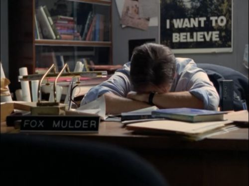
To everyone else I was absolutely certifiably bat-shit crazy, and even I had my doubts concerning my sanity.
Industrial Contractions
In was 1981.
At that time, America was suffering from the first of what would eventually become a sequence of many industrial contractions. I entered the labor force at the same time as the (#1 employer in the nation) Steel Industry collapsed.
Collapsed isn’t the right word for it. Perhaps Armageddon, or maybe MOAB realignment would be better.
Industrial contractions are normal. Yet, how it influences your life, depends on who is running the government at the time. But this wasn’t just closing a factory of two. It was the wholesale shuttering of an entire industry that employed hundreds of thousands of people.
Entire states were devastated. The “Industrial Heartland” was renamed “The Rust Belt”. And I, I was stuck straight down in the middle of it. Ouch!
A Story
Let me relate a little story.
This event took place about two centuries ago. It took place in France, which was at the time, one of the top developed nations on the planet. They possessed an enormous military, and was the center for art, culture and science. To support this, they employed an enormous bureaucracy of high-paid clerks and analysts.
According to Jacques Necker, everything was just fine. Jacques Necker was the fiance minister of France. He was the expert in the national budget, and he and his little army of "bean counters" monitored the movement of taxes, and outlays throughout the nation and their global empire. They were well-paid, experienced, and monitored the financial health of the nation. In 1781 he published a report called Compte Rendu au Roi. This was an amazing document. This report astounded everyone because it simply confirmed what all the French elite had been saying all along. Despite extraordinary public services and military spending, France had a net credit position of +10 million livres. In other words, the country was in perfect fiscal health.” Sounds great. Sounds legit. (Sounds familiar…) Right? You know what, though? It turns out that Necker had "cooked the books". Rather than being 10 million on the positive side, France had racked up 520 million livres worth of debt. This was a pretty serious problem as they could no longer afford to pay interest. Yikes! France had spent decades accumulating prodigious debts. [1] They built monuments, and parks. [2] They constructed the splendid cities that still inspire awe today. [3] They explored the world and expanded their empire. [4] They engaged in almost constant military conquest in far-away lands. But you know what? This all came at great cost. However, it never seemed to matter. The French government knew they were the world’s dominant superpower. As such, they overspent their national income. For them, it was as if it were their divine privilege to do so. When you are the dominant nation, you can spend money without consequence. As William Olphus describes in his book Immoderate Greatness: Why Civilizations Fail, the French “tended to see the natural world as cornucopian-- that is, as a banquet on which they were free to gorge without limit.” Nearly all superpowers see the world in this way. “We’re #1 therefore we no longer have to be fiscally prudent.” For those of you who are unaware of the fourth Turning, here are the origins of the theory. Sir John Glubb, having seen his own British Empire fade as the world’s superpower throughout the 20th century, wrote The Fate of Empires in 1978. Glubb argues that great civilizations start with an Age of Pioneers-- those who work hard and build wealth. It then progress rapidly through an Age of Commercial Expansion, Affluence, and Intellect. Then, it falls and decays in an Age of Decadence. This is a decadence in which the entire society feels entitled to a level of wealth that they neither earned nor can longer afford. Even when faced with obvious fiscal realities, they make no changes. Only when a crisis erupts does the society demand action. And of course, at that point, it’s too late. (All credit to Simon Black for the bulk of this story.)
We discuss this later on in how the <redacted> cultivate this nursery.
Anyways, the point herein is that our government fails us, the people that it is suppose to protect, when there are industrial downswings of a significant nature. Do not buy-into the explanation that it is “normal”. It is not. It is a failure of the government. Nothing less.
Back to the narrative
With the collapse of the steel industry, the “backbone” of American labor was broken. (It would take many years to recover.) At that time, no one worked. Unemployment was rife. People could not comprehend what was happening.
- Layoffs were new, and unheard of.
- When confronted with a laid-off person, the assumption was that they were fired.
- To be fired, you had to be a particularly super lazy person.
As until that point in time, most companies offered work FOR LIFE with generous pensions. In the larger companies, it was possible to retire in your middle 40’s, with retirement in your 50’s common-place.
Up until that time, work was everywhere, and people could obtain work as a High School drop-out. It was pretty much “known” that if you had a college degree, you were “set for life”. Meaning that you would always be employed, have a great income, and never have to worry about being unemployed. It was a different time. Only the most tardy and lazy would ever lose their jobs.
Up until the 1980’s, most employed Americans never worried about losing their jobs.
As such, being “laid off” was much harder at that time than it is today. You were looked upon with disdain. As such, and personally, it was a difficult time for me, indeed.
“In the dust of defeat as well as the laurels of victory there is a glory to be found if one has done his best.” ― Eric Liddell
Let’s wind back the clock somewhat. Let’s review what happened… (It’s my method, don’t you know…)
Found Work after the Navy
I left the Navy and after a (short) period of several months, I eventually found work elsewhere. I managed to obtain numerous interviews, and found a position back in (good old) Western Pennsylvania. At that time, the steel industry was still big and powerful.
I obtained a “management slot” in a small but growing steel company. (Small is relative. At that time, Edgewater Steel employed 6,000 people.) As such, I worked as an engineer for a number of months in a steel factory in a suburb of Pittsburgh. At that time, the nation was just beginning to feel the strain of International competition. As such, many companies maintained their traditional industrial working models.
I went to work, did my job, and everything was pleasant.
A Need to Move to California
A person works at a stable job. You fall into routines. Life becomes predictable. However, I started to feel a strong urge to go to California. It began maybe six months into my new job. As time continued, the urge became more and more demanding.
It became truly urgent.
It began to become an obsession. I bought a road atlas and started to look at the maps of the roads leading to California. California was where I wanted to go. California was where I needed to go. California was on my mind night and day. I could not shake the thoughts away. I had to find work in California. As a result, I started to apply for work at jobs in California, and I started to outfit a van that I turned into a small camper so that I could go there and look for work. It had to be California.
California was the place for me.
Prior to my experience with the Navy, I would have never adopted such a personality. I was stable. I was boring. I was a “work horse”. I was the person who never quit; who never complained. I was a great follower. I was an even greater worker. I would have made a great lemming. Now things were quite different; I was the restless adventurer. I could not be satisfied with anything short of the gnawing of my soul. My mind would latch on to the idea and the concepts haunting me. They would not stop. They were relentless. I had to go. It had to be California. I had to leave as soon as possible.
However, luck or life opened doors to make things happen.
Is luck a truly random occurrence? Or is it, in this heavily extraterrestrial-monitored nursery environment, a particularly placed series of events purposely directed towards a set of achievable objectives? In hindsight, based upon what I understand, the truth is obvious. There is no luck, but rather pre-planned events initiated by quantum consciousness and implemented with help from our extraterrestrial benefactors.
Lay Off at my Factory
At exactly one year, to the month, of my (entering MAJestic) and leaving the Navy my life changed. I was given a “pink slip” at my job where I was working as an engineer. As luck, or fate, would intervene, I was suddenly laid off from my job.
Pink Slip I was discharged from my duties and left the company where I worked. This was different from getting fired for poor behavior or poor work quality. This procedure is also known as being “down sized”. At that time, many companies were restructuring themselves to become more profitable. In the process they often reduced the size of their labor force. I was one of the first. Which meant that only a precious few understood what was going on. Everyone assumed that I was lazy and was fired. They did not understand what a "lay off" was. That would not happen for another decade and another 500,000 laid off people. Working as an Engineer In the steel industry at that time, all “management” were engineer-educated individuals who would rotate through different departments and climb the (internal) corporate ladder. The idea of an MBA-led career path in a major manufacturing industry did not occur until a decade later. (Though, I suspect that it began in the automotive industry a decade earlier.) The mere idea that a non-engineer could ever manage a manufacturing company was laughable (at that time). Fate The idea of free will may have arisen because it is a useful thing to have, giving people a feeling of control over their lives and allowing for people to be punished for wrongdoing.
When you lose our job unexpectedly (As mine was. As the “low man on the totem pole”, I was the first to be “let go”.) it is a surprise. You become very disoriented. People around you do not understand, and are very confused.
They often blame you. (At that time, the term “lay off” was relatively new. Up until the the late 1980’s it was very, very rare for a person to be “laid off”. If you lost your job it was because you were fired. Exceptions abounded for “blue collar” workers, but “white collar” workers were never “laid off”.
So, when I was “laid off” early in my young career, I met a lot of misunderstanding and opposition. When mentioned to others the reaction was shock. I just didn’t “look like” the kind of person who would be fired at his work.)
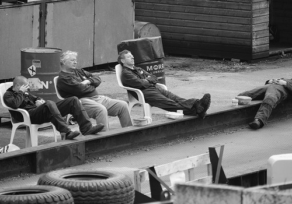
Low Man Low man on the totem pole means that the person is at the bottom in a hierarchical system. A totem pole is a statue of carved faces stacked one on top of the other. The face at the bottom is the last of the stack. The carved faces above it, would be higher up in rank or authority.
Today, getting “laid off” is very common. That was not the case in the early 1980’s. At that time, people tended to work one job for their entire lives, then retire on a company pension. It was a different time indeed.
From a Reference for Business… “Many of the layoffs in the 1980s and 1990s stemmed from reengineering, restructuring, and downsizing efforts to make U.S. firms more efficient and profitable in the face of intensified international competition. Layoffs resulting from reengineering and restructuring were unique in that restructuring affected a large proportion of white-collar, managerial, executive positions. For example, the American Management Association found that two-thirds of employees laid off in 1994 were salaried, college-educated workers. Growth of foreign and domestic competition, stagnant earnings, and a slow economy motivated the first round downsizing and layoffs in the early 1980s. As the U.S. economy improved in the mid-1990s and remained strong in the late 1990s, large-scale layoffs continued at about the same rate—even at highly profitable firms—marking a break with historical layoff patterns. During the late 1990s, many of the largest companies in the country underwent reengineering or downsizing, despite enormous profits. General Motors, for example, continued to reduce its workforce, announcing in 1998 that it would cut 50,000 jobs to remain competitive, even though the company's profits rose 35 percent in 1997. AT&T led U.S. companies in 1998 layoffs with 18,000, followed by Compaq with 15,000, Motorola with 15,000, Raytheon with 14,000, and Xerox with 9,000. Furthermore, McDonald's Corp. laid off workers for the first time ever during this period as the company began to reduce its overhead and management personnel in an effort to increase productivity. A flurry of bank mergers —more than 370 of them—in the late 1990s also led to additional layoffs. The top five mergers of 1998 alone resulted in 20,000 job cuts. According to Fortune, banking along with media/entertainment and utilities jobs were the most prone to layoffs in the mid-to-late 1990s because of mergers, accelerated competition, and government deregulation. Layoffs resulting from downsizing continued throughout 1990s, despite low unemployment, a strong economy, and the lack of proven economic benefits from downsizing. According to a Wharton School report, downsizing typically failed to boost earnings or stock market performance consistently. Moreover, other studies indicate that downsizing tends to cause low employee morale and tarnish a company's image. In addition, some reports found that a number of companies eventually are forced to fill positions left open by layoffs by paying premium wages.” Read more: http://www.referenceforbusiness.com/encyclopedia/Kor-Man/Layoffs.html#ixzz56rMhb3FA
I worked hard to find new employment.
However, I was quite unlucky. No one was hiring.
Unemployment was rampant, and every week mass layoff announcements were being made all throughout Ohio, and Western Pennsylvania. 500 here, 3000 there, and an announcement of another couple of thousand. The work force was being shredded before our eyes, and all of us had to compete against each other for the few precious jobs available.
- Lessons from the steel crisis of the 1980s
- Steel crisis – Wikipedia
- The Decline and Fall of U.S. Steel
It was a nightmarish time.
Media Ignored the Situation
The news media ignored the situation (as did our Congressional representatives and Senators). Oh, eventually they managed to report on what happened…ten years later.
However, at the time, they concentrated with the news from Washington, D.C., Hollywood, and the new millionaire entrepreneurs out of California (Steve Jobs and Bill Gates for example.).
Then as now, the media were elitists.
They only reported on what THEY considered important. As such, they would always inject their own biases in their reporting. We, normal and “regular” people, were shunned and avoided by the mainstream press. We were considered unimportant. We were on our own. Nobody gave a “rat’s ass” about us “common” working folk.
The only thing the local news would report on was the layoffs. They seemed to ignore the causes and preventative measures. Instead they focused on a group of trapped whales up North in Barrow, Alaska.
Operation Breakthrough was an international effort to free three gray whales from pack ice in the Beaufort Sea near Point Barrow in the U.S. state of Alaska in 1988. The whales' plight generated media attention that led to the collaboration of multiple governments and organizations to free them. The youngest whale died during the effort and it is unknown if the remaining two whales ultimately survived. There is an absolutely great movie about this called “Big Miracle” made in 2012. It is worth a watch.
They focused on attempts to rescue geese in Canada.
A great movie regarding this is “Fly Away Home”. Fly Away Home (a.k.a. Flying Wild and Father Goose) is a 1996 family comedy-drama film directed by Carroll Ballard. The film stars Anna Paquin, Jeff Daniels and Dana Delany. Fly Away Home was released on September 13, 1996 by Columbia Pictures. Fly Away Home dramatizes the actual experiences of Bill Lishman who, in 1986, started training Canadian geese to follow his ultralight aircraft, and succeeded in leading their migration in 1993 through his program "Operation Migration." The film is also based on the experience of Dr. William J.L. Sladen, a British-born zoologist and adventurer, who aided Lishman with the migration.
They focused on how Ronald Reagan was going to cause World War III by insisting that the Berlin wall be torn down.
"Tear down this wall!" is a line from a speech made by US President Ronald Reagan in West Berlin on June 12, 1987, calling for the leader of the Soviet Union, Mikhail Gorbachev, to open up the barrier which had divided West and East Berlin since 1961. Glenn Beck has a decent write up on this at http://www.glennbeck.com/2017/06/12/87-reagan-challenges-gorbachev-to-tear-down-this-wall/
Instead, they focused on how much better the nation was run under a Democrat President, you know, like Jimmy Carter. And lectured us (peons) on how now the roads won’t be fixed, and bridges won’t be built because President Reagan wanted to cut taxes on the middle class.
Yup. The infrastructure was going to collapse because no taxes would be collected. We must… must… MUST demand Americans pay taxes! They screamed into the airwaves, 24-7.
They screamed. They demanded. They ordered.
Stop taxing businesses. It is Americans that must be taxed! It is a fiscal necessity! They screamed on the airwaves.
America will collapse if Taxpayers keep their own money The progressive left is still at it (American Communists). Here’s some links to their articles that essentially states that if the government is not allowed to take your (most Americans) money, the world will collapse. Go here to read this drivel; https://www.salon.com/2014/04/19/reaganomics_killed_americas_middle_class_partner/ and http://www.blogster.com/southwesterngrad/how-reagan-destroyed-america-the-middle-class .
They hated the president, and they would offer all kinds of reports on his slightest mistakes. They would make fun of his little personality quirks, and would attack him relentlessly. They never were as sycophantic as they are today with President Obama.
So many articles on this! Go here; https://townhall.com/columnists/floydandmarybethbrown/2008/06/19/mainstream-media-love-for-obama-infects-news-coverage-n1014670 and https://www.theatlantic.com/politics/archive/2013/02/why-does-the-media-go-easy-on-barack-obama/272807/ and http://www.aim.org/on-target-blog/the-obama-media-love-affair/ and https://rashmanly.com/tag/mainstream-media-in-love-with-obama/ and http://www.americanthinker.com/articles/2009/05/narcissus_and_echo_obama_and_t_1.html and https://townhall.com/columnists/calebparke/2017/03/15/the-mainstream-media-was-awol-during-the-obama-years-n2299307 . Some quotes from the above; “It is troubling that our president is a pathological narcissist caught up in the thought patterns of Darwin, Marx, and Alinsky. Even more troubling is the fact that the Mainstream Media (MSM), suffering from an Obama-inspired narcosis, shirks its duty, refusing to publish or even explore any aspect of Obama's dark side. There is room for much optimism, however. If the ancient story of Narcissus and Echo plays itself out as Ovid recorded it, and Obama and the MSM are their contemporary counterparts, both will fade away in the not too distant future.”
Ah, nothing ever changes, does it?
My unemployment support was quickly running out. The bank (Mellon Bank) repossessed my motorcycle, and my car payments were going to be exhausted in a few months.
After nine months it would all be gone. There wasn’t any work in my “neck of the woods”, and I needed to find work or starve. For, as all American men can attest, if you are over 21 years old and are “able bodied” you are EXPECTED to find work and make your way in society.
Not so today.
Unemployment Support The state government would pay a laid-off worker a fraction of their pay for a set number of months so that they would not starve. The amount depends on the state where you were living in. Massachusetts and California were the most generous (in my experience) while Arkansas and Mississippi were the most pitiful.
Today, I read many stories of children living with their parents until they hit their 40’s. Not so with my generation. You were physically evicted and “kicked out” from the home when you hit your 20’s.
Because of this necessity, I was forced to travel elsewhere to look for work. Of course, I was obsessed with going to California (for some reason, heh… heh…). To this end, I decided to travel there to locate work that would employ me.
Fate
Again, I must give pause to contemplative endeavors. Was this coincidence? Was this an artificially manufactured event that would discharge me? Was this part of a bigger picture that involved whole masses of people, events and staged events?
In my story, over and over again, there would be coincidences.
These coincidences would often times, on their own merits, appear to be logical and normal events. But on the whole, when taken together and viewed in contextual alignment, they all appear suspiciously suspect. They appear to be indicative of a grand scheme of manipulation. Indeed, this was a manipulation of great forces and powers far beyond the control of any one person or group of people.
There is, in truth, no such thing as a coincidence.
Everything in our lives is planned and scheduled by a very advanced system of control. It involves multiple dimensions, powerful energy states that reach well into the quantum sphere, and a degree of timing that is “timeless”. However, as I know this to be the case, I still often have trouble grasping with this truth. I still want to believe that I had a degree of control in the decisions that I made, and the actions that I followed. The reader will see evidence of this quandary in this blog, but please realize that I do know (as much as I do not want to accept it) that our lives are fated.
During this time, the economy in the United States was in shambles.
America was crushed and its’ industry collapsed. For many of us, it seemed that there was nothing special about the United States any longer. The United States seemed like just another nation-state, and, most unfortunately, one that’s become especially predatory toward its citizens.
At that time, the only thing that mattered was the lifestyle of the Congress-critters, the bankers, and the wealthy on their exclusive golf courses. How do I know? The media reinforced it to me daily.
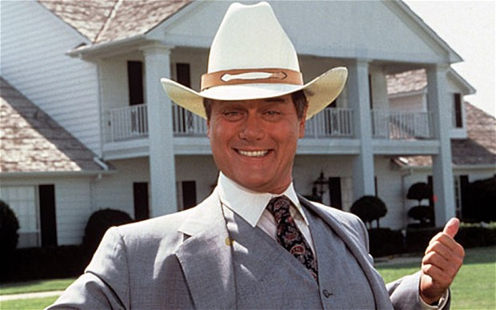
Meanwhile, the Japanese had rebuilt their industries and were aggressively capturing American customers. They offered cheaper prices, better quality and newer technology. America couldn’t compete (though it made efforts to try.).
Japanese effort to rebuild its' Industry World War II had devastated the industries of Europe, and Japan. But, unlike the United States, which rested comfortably in the belief in continued economic mastery, the Japanese devoted all their energies to rebuild their industrial base. The fruits of their labors were just beginning to be felt in the early 1980’s, as stubborn American industries began to feel the pressure of foreign competition. Changing demographics & Industry The US became an unsustainable service sector based economy from the 1970s onward when service sector employment diverged from manufacturing without a corresponding boost in productivity. This materialized as a galloping wallop of unemployment. The numbers, or more accurately, graphs show the effects. When one looks at a graph of productivity growth over time the effects of this becomes clear. Adjusting for the WWII anomaly (which tells us that GDP is not a good measure of a country’s prosperity) US productivity growth peaked in 1972 – incidentally the year after Nixon took the US off gold. Hum... could there be a correlation? I wonder... Factories tried to recover, and they had sputtering bouts of success. Yet, the overall productivity decline witnessed ever since is unprecedented. Despite the short lived boom of the 1990s US productivity growth only averaged 1.2 per cent from 1975 up to today. If we isolate the last 15 years US productivity growth is on par with what an agrarian slave economy was able to achieve 200 years ago. (With hindsight we know that finance did more harm than good so we can conservatively deduct finance from the GDP calculations and by doing so we essentially end up with no growth per capita at all over a time span of more than 15 years.) In effect, US real GDP per capita less contribution from finance increased by an annual average of 0.3 per cent from 2000 to 2015. In fact, from 2008 the annual average has been negative 0.5 per cent. In other words, we have seen an overall weakening of the US economy from the 1970s. The reason is simple enough. For we know that monetary policy broken down to its most basic form is a transaction of nothing (fiat money) for something (real production of goods and services). Thus, the true reason for the “recession” and the unemployment at that time becomes apparent.
While there were many things that the American companies could do, the most common reaction was motivated by profit concerns. Thus, for most of the American industry the reaction was not logical and planned, but was reactionary. The American reaction was to reduce the size of its work force.
The buzz word at the time was “efficiency”.
Efforts were made to stop the industry practices of “keeping people on” (Retaining employees in the belief that their skills and abilities could be used at a later date, even though there was no work for them to do at the present.) as “overhead”.
Workers were “laid off” and their responsibilities given to others.
What began as occasional layoffs soon became a flood of firings. Companies started to expect their workers to do the work of those laid off. Efficiency sky rocked, but only to a point. It was, unsustainable in the long run. Millions were unemployed, and work was difficult to come by. Since I too lost my job, I found myself in the same situation as thousands of other unemployed Americans. We were all out of work, and out of luck.
I needed to find work, and I needed to do so quickly.
It did not take me long to decide what to do. I decided to go to California. For, to me, California was the place for me.
California.
California.
California.
Outfitting a Vehicle
To this end, I outfitted an old van that I had bought. It was an old white 1976 Dodge Tradesman 100. Purchased for $2000. It was empty inside, but had a decent engine and frame. It was a mini-van and very popular at the time.
I insulated it, and installed wood panels made from old shipping crates. I placed a bed inside and added a partition behind the drivers and passengers seats. I fixed the engine and the drive train, and set off to find work. It was a great place to sleep in, and to haul stuff in, but without a bathroom, kitchen or shower it was rather inconvenient. It was, to put it bluntly, a mobile hotel room without a bathroom.
I equipped it with a bed and some rudimentary storage and set off to find work.
+ + +
I worked where I could find work.
I worked at many fast food restaurants. These included McDonalds, Wendy’s, Hardees, Carl’s Junior, What-a-Burger, Burger King, etc.
I was not proud. If I could get paid, I did the work.
I also worked as a janitor. I cleaned offices late at night, and places like the YMCA. I also worked as a temp and performed tasks ranging from digging ditches, cleaning out industrial scraps at construction sites, washing windows, and moving boxes for a storage company. When you are unemployed and hungry, you do what you need to do. You don’t sit down and wait for something to come to you.
Sure, my stomach growled. But, when I worked fast food, I got a free meal on top of my pay. That helped a lot. I would save one half of my burger for my wife. I’d take it to the van after my shift. I would also get some of the packets of lemon juice in the condiments section. We could add that to water with some sugar and make some cheap lemonade.
Of course, I traveled to California, but once I arrived there I didn’t know where to go.
I lived in the van (a mobile “camper” that I had created) and worked low wage jobs to make ends meet. (It was insulated with a bed, but no toilet and water. Good for an overnight sleep, but not so great for living in.)
Precisely because I lived in this manner, it was difficult for anyone to locate me. Obviously contacting me was extremely difficult. I would work in a town, and save enough money to repair the camper, and get enough gas and food for the next couple of months. Then, I would continue on my journey. It was a cautious adventure.
Driving Past Ridgecrest
Curiously, as I drove west I kept on driving towards a remote town in the middle of the desert west of Los Angeles. The town was Ridgecrest and on numerous occasions I kept on finding myself driving towards it. But I never stayed there to look for work.
Instead, I kept driving past towards more potentially promising places to be employed. (The reader should recognize that while you might “feel” a “tug” or interest in a certain place, your mind will tell you to ignore those feelings. Instead your mind will instruct you what to do based upon what you are exposed to (news typically) and reason.)
The mind is in constant battle AGAINST your feelings.
The mind is in constant battle AGAINST your feelings.
Yet, for me it seemed that all roads lead to this obscure town. I would get lost and find myself in the middle of a flat desert plain, with nothing nearby. But looking up I would see a sign pointing to the desert city of Ridgecrest. It sure was spooky.
A reoccurring theme during most of my life was how I would have “urges” to inspire me to go and do things. These urges were nothing less than ELF directional commands sent to me. That is; commands originating out of the “Core Kit” dialogues. More about that later.
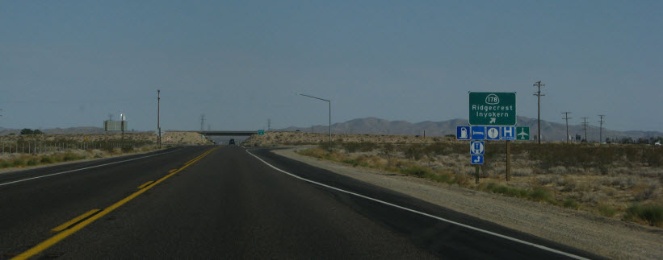
All in all, I traveled in circles trying to go to some point in California. I felt “right” when I was driving in the direction to California, but I didn’t know where to go. I had no set destination.
The mind is in constant battle AGAINST your feelings.
As such, I visited many of the cities and towns in the state, but none “felt” right. While some were very beautiful (like Auburn, California) the urges would not let me rest.
The mind is in constant battle AGAINST your feelings.
It had been approximately two years since I had left the Navy.
The memories of what had truly happened there was completely erased from my mind. I remembered joining the Navy, and leaving the Navy. But I had no recall of what happened between me and the Commander at the base. I had no active recollection of his words, nor did I have any active memories of the transportation portal. It was all forgotten.
Like misplaced memories.
I had adopted a new life, and had accepted it. Occasionally as I drove the camper, I would muse about what my life would have been where I to have stayed in the navy as a pilot, but my mind would always end up focusing on the issues directly at hand at the time.
The issues were always about existing.
Where can we park the van? How much money do we have, and how much gas will it purchase? Where can we sleep, without getting hassled by people, or the police? Where can I get work, and where will I be able to cash the check once I receive it? Where can we get a shower and wash off the stink? (A seriously big issue indeed.)
Looking for Work
The reader should understand that I moved into a van to leave an area of high unemployment (that would later become known as the “rust belt”) to an area where I could find work.
I was not “finding myself”, or “exploring the world” as a backpacker.
I was not a hippy, finding “free love” and adventures with a bong, and a box of contraceptives.
No. Not at all. I had a mission. I had to find work in California. It was my one and only goal.
The Rust Belt The Rust Belt is a region of the United States, made up mostly of places in the Midwest and Great Lakes. Rust refers to the deindustrialization, or economic decline, population loss, and urban decay due to the shrinking of its once-powerful industrial sector. The term gained popularity in the U.S. in the 1980s. The Rust Belt begins in western New York and traverses west through Pennsylvania, West Virginia, Ohio, Indiana, and the Lower Peninsula of Michigan, ending in northern Illinois, eastern Iowa, and southeastern Wisconsin. Previously known as the industrial heartland of America, industry has been declining in the region since the mid-20th century due to a variety of economic factors, such as the transfer of manufacturing further West, increased automation, and the decline of the US steel and coal industries. While some cities and towns have managed to adapt by shifting focus towards services and high-tech industries, others have not fared as well, witnessing rising poverty and declining populations.
I could not afford to stay in hotels.
I did not have the money. I knew of very few people in the state, and thus had no connections to visit. I had no place to “crash at” while I was looking for work. Being low on money makes one creative. I had to find a way to make it to California, and it had to be the cheapest way possible. Short of being a hitchhiker, or hopping a freight train, the only thing that I could think of was driving there myself, and sleeping the car while I looked for work.
I did the “sleep in the car” bit a few times in the past.
It did not work out too well. Cars are cramped, people can look into the windows, and you always wake up with a stiff neck and a sore back. (Not to mention getting eaten alive by insects.) No, to travel, I would need a small van. It did not need to be large. It just needed to be big enough for a small mattress, and a place to store my clothes. It would need to have a good engine, and be insulated from the cold. Aside from that, I could then be equipped with the necessities to find work in a place far, far away.
I did what I could on the basis of the little that I knew. I was, after all, in my mid-20’s and still very young and “wet behind the ears”. My father insisted that I stay in Pittsburgh and try to find engineering work there. I disagreed. In this case, I was right. (Pittsburgh didn’t recover until around 2005, about twenty years later, and then it’s recovery required other talents instead of engineering.)
If I had stayed, like some of my classmates, I would be on a life path that was truly unlike anything that I had studied to be.
Later, as I began my journey, I discovered the importance of a small shower and bathroom. I discovered the need for a small refrigerator and heater. I later bought myself a class “A” motor home about fifteen years later that possessed all these amenities. However, that is a story representative of another time.
Men need to work
I have strong opinions of people who do not work for a living.
This goes double for those who do not desire to contribute to society. Men NEED to work. We need to contribute to society and we need to take care of our family. It is a biological NEED. Rather than rant on, I prefer to let someone else rant on about this subject.
Here is a rant from a blogger in Thailand;
“Sitting at a regae bar last night with some mates I had an experience that happens quite a lot to me in Thailand and that's meeting backpackers. This guy comes to the bar and orders a drink and says hello to me. The American in me would never start a random conversation especially with this dude but the outgoing Aussie in me always has to say hello. I wish now I'd got a photo of this guy however the guy looks similar to the picture below. [Photo of a heavily tattooed man with piercings all over his body, and shirtless. Not provided here because it is ugly.] So the first thing I notice about this dude is the overly large earing he has stuck through his nose, the ear piercings that look like plates in his ears and the fact he is covered in tats. Not the kinda guy I'd hang with regardless of his personality because he'd probably scare the girls away, but whatever, I'm having a good time I say hello back and he starts to chat. I don't have a problem with backpackers in general but I can only stand them so much, the conversation always goes something like this: What's your name? Where you come from? Where have you been? Where are you going? After you've answered these questions the backpacker types start telling you how they've been to 18 countries in the past few months and how you should go here and have you been there "oh your missing out" that somehow I'm less than because I don't stick a bag on my back and sleep in $3 rooms with 10 other dudes. Inevitably after they tell you all about the world they have nothing left to say except how excited they are to put the bag on their back again and sleep in another shitty room. Listening to this guy last night I'm being polite and interested when he got to that point where he'd rambled on about his travels enough that he didn't have much more to say so he asks me what I do. So I told him part of the truth, I own “Living Thai” a blog on Thai girls and Thai hookers and sex in Thailand. Should of seen this guys eyes, he looks at me with total horror like I'm a child molester or something and he exclaims "I don't like that, that's wrong" maybe he was lost for words? Not sure, but I'll never forget this guys eyes it was priceless. So this guy is obviously offended by sex (looking at him you know he doesn't get much) or at least Thai hookers or the fact that girls sell themselves for money. So yes it's true, I'm a pimp, and this site is #1 for information about Thai hookers. I don't hide the fact or pretty it up in anyway and why should I? This is life dude, this shit happens and why should I make apologies for it? This is how these Khao San Road types are like, they'll be quick to attack you if you judge them for looping a bull ring through their nose or having enough ink to kill a whale and then attack you again if you don't also ink yourself up with tribal tats and stab yourself with rings making dance circles spinning fire singing coombaya the world is a lovely place. It's not dude, you gotta get outta your fairyland and talking to "like-minded" people to find out it's not. Try to understand the world for what it is not just suck up the shit you like. Open your mind a little. I don't need to travel around the world to know that the world is shit, it's dark, and there are terrible people doing terrible things. So many people pass through Thailand with their eyes closed believing if they ignore it or don't partake in it then it doesn't happen or that they are helping. Many expats are like this too, they think cause they spend a few thousand dollars a month in Thailand that they are "helping" Thai people and Thailand should reciprocate with an easy and cheap visa so they can keep spending 30-40 thousand baht a month in the country. You're contribution is so small, no you do not make a difference especially to the average Thai. I don't normally talk to dudes that look like they just came out of a clown carnival (for reasons stated) but I'm not going to judge a guy off the bat because he looks like a freak-show either. Maybe the dude would of respected me more if when he spoke to me i said "I don't talk to clowns".
It was a fine rant.
However the point must be made clear. When I moved into my van it was to look for employment. I had a need, a desire, and an urge to find work. I knew that I needed to find it in California, for at time all work was in California. Isn’t that were Steve Jobs was making his fortunes? Isn’t that were Bill Gates was raking in billions of dollars? Isn’t that were Hollywood is, and Silicon Valley is? Isn’t that where all the military technology was that will defeat the Communist Menace in the Soviet Union? California was a mecca for engineers.
It was where I should go.
While Wall Street was the place to go if you had an MBA in Finance, California was where you should go if you were an engineer. California was where young, bright engineers such as myself, belonged.
I was of the generation of Steve Jobs and Bill Gates.
I outfitted a van. I set it up as a comfortable sleeping quarters, so that I did not have to pay for expensive hotels. I took an unused bed mattress, and some scraps of old (living room) rug scraps and decorated the interior. (left over carpet from my parent’s TV room.) I used the Styrofoam from cheap (Wal-Mart) ice coolers as insulation, and then paneled over it with old hardwood from decades-old wooden freight pallets (I paid $15 for the lot.) . I put tinting on the interior windows, and installed a sunroof that I got for $5 from a local automobile junkyard.
I made sure that the motor and operation of the vehicle was perfect, and as such, I moved onward and outward. I began my search for work with less than one hundred dollars to my name.
Living the life of unencumbered freedom.
“Those who do not move, do not notice their chains.” -Rose Luxemburg
Obviously, I did not follow the typical career development of a Naval Aviator. Instead I began, what I call, “The Big Adventure”. It was my rite of passage. While I “should” have been on a carrier flying high performance aircraft, like the rest of my classmates, I was a homeless, penniless, nomad wandering aimlessly in the hinterlands of America.
Some days would be great with extreme beauty and a fine proper meal. While other days were spend starving and avoiding the hot sun inside a sweltering metal box that I called “the camper “or old “urge”. True travel is not glamorous. Not at all.
Rite of Passage Sociologists have identified three phases that constitute a proper rite of passage: separation, transition, and re-incorporation. Separation: During this phase an initiate is separated in some way from his former life. In the case of the Mandan tribe, the young man was isolated from the village in a hut for three days. In other tribes, boys’ heads were shaved and they were ritually bathed and/or tattooed. In a more modern example, when a man has just enlisted in the military, he is sent away to boot camp. His former possessions are put aside, his head is shaved, and he is given a uniform to wear. During the separation phase, part of the old self is extinguished as the initiate prepares to create a new identity. Transition: During this phase, the initiate is between worlds-no longer part of his old life but not yet fully inducted into his new one. He is taught the knowledge needed to become a full-fledged member of that group. And he is called upon to pass tests that show he is ready for the leap. In tribal societies, the elders would impart to the initiate what it meant to be a man and how the boy was to conduct himself once he had become one. The initiate would then participate in ritual ceremonies which often involved pain and endurance. In the case of the new soldier, he is yelled at, prodded, exercised, and disciplined to prepare him to receive a rank and title. Re-incorporation. In this phase, the initiate, having passed the tests necessary and proving himself worthy, is re-introduced into his community, which recognizes and honors his new status within the group. For tribal societies, this meant a village-wide feast and celebration. The boy would now be recognized by all tribe members as a man and allowed to participate in the activities and responsibilities that status conferred. For the soldier, his boot camp experience would come to an end and both his superiors and his family would join in a ceremony to recognize his new status as a full-fledged member of the military. During the all phases of the process, the men who have gone through the ritual themselves guide the young initiate on his journey. By controlling the rite of passage, the men decide when a boy becomes a man.
I had named my van after a story that I had read. I named it after the name of a hippy van in a story that graced most of the pages in a book known as the “Last Whole Earth Catalog”.
The Whole Earth Catalog (WEC) was an American counterculture magazine and product catalog published by Stewart Brand several times a year between 1968 and 1972, and occasionally thereafter, until 1998.
Steve Jobs compared The Whole Earth Catalog to Internet search engine Google in his June 2005 Stanford University commencement speech.
"When I was young, there was an amazing publication called The Whole Earth Catalog, which was one of the bibles of my generation.... It was sort of like Google in paperback form, 35 years before Google came along. It was idealistic and overflowing with neat tools and great notions."
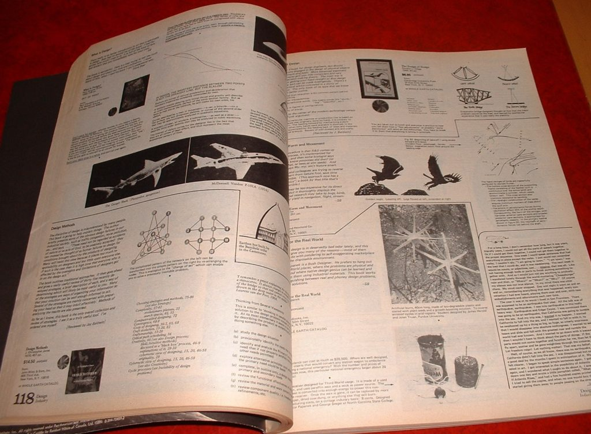
Above is a page from the Last Whole Earth Catalog. In the lower right corner, the reader can see a box with the image of an alligator or dragon and some words. That is the hippy story where I obtained the name whereas I named my van “ol urge”.
An adventure consists of extremes. You see the great beauty of life, and the depths of the abysmal.
After all of this, I became a “somewhat” normal person again. But, I (the truth) was anything but normal. Not only was I a highly trained, college educated, intellectual, but I was implanted with specialized probes; probes of unique abilities and secretive purposes. I didn’t know why, but I suddenly found myself questioning everything around me. I stared to ask questions about how humans lived in America and what my role was.
“This reminds me of when the Reagan Administration gave out blocks of cheese to Food Stamp recipients. Soon after the deliveries were made, bars around Philadelphia were serving grilled cheese sandwiches during happy hour.” -Posted on 2/13/2018, 8:30:33 AM by Opinionated Blowhard
I wondered why I couldn’t qualify for all the “free” stuff that the government promised me.
It was true. I could NEVER qualify. I went to a welfare office in upstate New York to apply for food stamps. The woman behind the counter, a nasty prune face of a woman named Mrs. Slen (to this day, I will never forget her name) told me that she’d “just happen to know that engineers do not get laid off.” (She knew, she said, because she was married to an engineer.) She said that I was just a lazy good-for-nothing person, and went out of her way to make my life extremely difficult in the pursuit of government benefits. She would misplace my paperwork, and I would need to come in and do them all over again. She would call me at 5:45 and tell me that I would need to come in before 6:00 and sign something or the other. She would do all kinds of nasty things and make my life a “red tape” nightmare.
That was my life…
“They hide income. Dirty little secret is that some groups with “favored nation status” are rubber stamped through these programs and the bureaucrats look the other way. Whereas some little old white lady will be put through the wringer and made to jump through several flaming hoops of administrative red tape only to be denied. I saw this with my very own eyes.” -Posted on 2/13/2018, 8:10:58 AM by AbolishCSEU
So much for that little adventure…
I became Spiritual
One of the things that was constant during this period of time in my life were my night-time dreams. Once I fell asleep, my mind would rest, and after a while I would start to have these odd dreams. My consciousness sort of detached and I began to experience this “other” kind of existence.
It was really, really odd. Many of the “experiences” consisted of a kind of very…very…very…VERY vivid experience that communicated with my brain as an augmented dream. And they were always about going to school. I was always being taught things. I was constantly involved in education, and all sorts of weird things. Then when I woke up, I would look at the world around me and what I experienced quite differently…
I had a totally different point of view.
I started to wonder why real nasty people seemed to be so successful, and the softer nicer people all seemed to be destitute.
I became spiritual and in this train of thought, I moved upon faith and belief.
I became inspired within by an inner confidence… and upon that confidence; I embarked upon a new adventure… a greater adventure. An adventure fueled on … faith…
I became very spiritual and everything seemed, to me, to be connected.
The weather to the earth, and the movement of people to the movement of the moon. Things all seemed so interconnected to me. I began to question everything. Maybe it was living in the van, or maybe it was my experiences. Maybe it was due to the probes. I do not know why.
Travel
“A huge forest it was; and I was glad and grateful beyond measure for the scent of roots and leaves, the thick smell of the fir-sap, that is like the smell of marrow. Only the forest could bring all things to calm within me; my mind was strong and at ease.” — Knut Hamsun “Pan”
I often see inspirational pictures on the internet showing a map with some kind of words to inspire confidence to travel.
Yeah, it’s all good. But mostly, the people who do this sit comfy in their own rooms, and live their mundane day to day lives. They dream about travel, and they Photoshop about travel. They post articles about their travel dreams. They buy clothes that travelers wear, and expensive backpacks and gear. They collect interesting books and read about travel. But they don’t actually travel.
Typical Tumbler photo advertising for the joy of travel. These things can be found all over the Internet and serve to inspire us to leave our lazy-boy chair.
True and Real Travel
True and real travel is an adventure.
You leave your comfortable house with only $200 in your wallet, and you go. You just leave. You go make friends, or you visit friends you just made. You don’t buy expensive or trendy backpacks and nice looking road maps. That looks great in advertisements, but real travelers don’t use them.
Real travel is not only about the wilds of the forests, and the smell of nature. It is also about the dark and grimy stained gravel of a train yard, the back alleys behind centuries-old factories, the frighteningly-quiet cookie-cutter suburban neighborhoods with people peering out behind curtains.
It is all of this and more.
It is the empty quietness of an outlet mall at sunrise, the smell of a fresh pot of coffee being made at “Waffle House” at 4 am in the morning, and waiting outside on a grassy knoll while a “grease monkey” fixes your brakes. Travel is an adventure, and it isn’t always beautiful.
Real travelers, well, (for one thing) they stink. Showers are a once a week event. Their clothes are bought at Wal-Mart, or if they are really poor, the Salvation Army. Their note book is a $3 plain wire-wound affair. Their money is spent on the adventure itself. It is not spent on the trappings advertising the Dream-of-Adventure.
Today, like everything else, the “dream” has been packaged and marketed by corporate professionals. Many of whom have never set a foot in a park let alone the far off wilds.
Ah. The reader should not get confused. Backpacking serves a point if it is directed with set goals in mind. You take a trip for “X” period of time, with the goal of obtaining “A”, and “B” with the strong possibility that unknown factor “C” will manifest. You do it with what you have and you make do.
At the time, our trip took far longer than we wanted. The period of time was longer than we ever expected, and the discomfort in the van was worsening each month. Our goal of obtaining “engineering or career-related work” in California did not manifest, and the best we could do was low-end labor positions. This lasted for an extremely long time. (Without getting into too much detail, I ended up getting married with a girl from my “home town” and we embarked on this adventure together.)
Back Story We eloped, let it be known. Her parents wouldn’t have anything to do with a “Pollack”. We got married at a midnight mass in an Assembly of God (aligned) church on a Halloween evening. For those of you who think it was a bit hasty, as we got married on our second date, we were married for over twenty years. We only ended up getting divorced as a consequence of her health issues. These are complicated subjects and not really appropriate here at this time. Let it be stated that we started our adventure together, and it worked out just right.
Real Travelers
To my parents and my friends, they thought that I was just running around aimlessly. Indeed, much the same way that I view many of these “backpackers” out and about today.
Ouch!
When in truth, I was being directed towards California by the probes in my skull. Situations that permitted my ability to travel, and luck manifested at the proper time and place to make sure that my guided actions were truly manifest. On the physical, it appeared that I was an aimless wanderer. No one ever knows the true motives of others. No one really knows the situations of others, and the powers and forces that compel them to behave in (what appear to be) odd ways.
What is luck in a fated universe?
In fact, to see what true reality is, take away all the “on the surface conformity” and peer into the mechanisms that control and motivate people. If one does this, they will find and discover just how different we all are. In fact, even though others (relative to ourselves) are but “quantum shadows” of the reality of other souls, even their quantum supposed motivations are alien to what we know (as real) and what we expect.
Real Travelers
“Real” travelers don’t wait for perfection. They go when the “calling” occurs. Often they are not socially, and financially ready to make the trip.
“Real” travelers drink coffee at McDonalds ($1.25/cup), and shun Starbucks ($8.50/cup). They go into small family diners at the crack of dawn as the fog is just starting to burn away by the morning sun.
From The Art of Manliness... Many things in life are much better when done by hand in small quantities. Roasting coffee at home one or two pounds at a time produces just about the best coffee you’ll ever have. Most chains (Starbucks, notoriously) will actually over-roast so that every cup of coffee tastes the same, day in and day out. They take all the unique character out of the coffee. Roasting at home will give you a variety of flavors that you never even knew existed in coffee. Every man should know how to brew a decent cup of coffee. It’s an everyday skill that should be passed down from father to son, like shaving or mowing the lawn. It’s a manly ritual providing both utility and comfort. Consider history. Out on the trail, coffee was a staple among cowboys. Piping hot coffee helped a cowboy shake off the stiffness from sleeping on the hard desert ground, and it was also a good beverage to wash down the morning sour dough biscuits. However, cowboys didn’t have the luxury of fancy coffee brewers or French presses. They had to pack light, so all they usually had was a metal coffee pot, sans filter, to brew their coffee in. No matter. A cowboy could still make a decent cup of coffee. Here’s how. Bring water to a near boil over your campfire. Throw your coffee grounds right into the water. (That’s right. Filters are for city slickers.) Stir the coffee over the fire for a minute or two. Remove the pot from the fire and let the coffee sit for a minute or two to allow the grounds to settle at the bottom of the pot. (Add a bit of cold water to help speed along the settling process.) Carefully pour the coffee into your tin cup so that the grounds stay in the pot. Stand around the fire with your left thumb in your belt loop and your coffee cup in your right hand. Take slow sips and meditate on the trek ahead. Make sure you tip the brim of your hat slightly downward.
Real Travelers go to libraries to read the news, and relax. (They dare not spend a quarter to buy the newspaper. They read it at the library instead for free.) They visit parks, use the bathrooms in laundromats, look for bargain food in grocery stores, and forage for food in orchards.
They buy day-old bagels, or nearly expired fruits and vegetables from grocery stores. In a pinch they “dumpster-dive” and forage for food outside in the back of fast food restaurants.
“Real” travelers live on the edge.
The entire time that I was traveling and looking for work, I avoided begging.
The closest that we (I was married at the time) ever came to begging was asking a church if we could park into their parking lot. Sometimes, we would accept the support they gave us. However, what I really wanted was work. I would have been just glad to get $10 to mow a lawn, rake some leaves, change someone’s oil, or helped till a garden.
I was young, in my 20’s, and I was willing to do anything.
Hard Life
In fact, the truth is that during our travels there were many times where we were actually starving. We had run out of money, and with no gas, and no income, and no work ANYWHERE we would find ourselves going without eating for weeks at a time. I would say that the longest that we ever went without food was three weeks.
The wife didn’t have a problem with it.
She thought she looked “good”. I on the other hand, well I needed to eat. Typically however, we might have to go without food from three to five days. Eventually we could find work at a restaurant and get a free meal as part of our work. If only I worked, I would save half the food in a napkin, and bring it home to my wife.
Sometimes we would see a house with a fruit bearing tree in the yard. We would then knock on the door and ask to collect the fruit. The people were often very nice about this. It kept us alive. For three weeks in California, we lived off of lemons. Our teeth almost fell out... yikes. Other times it was raw onions and mustard packets from the fast food restaurant. Sometimes we would dumpster-dive for expired burgers in the trash bin behind the Fast Food restaurants. We did what we needed to stay alive.
This should not be confused with some “adventurers” who backpack around the globe “on the cheap” and ask for handouts along the way to support their travels. Those people disgust me. They really do. They are “aimless” and “ill prepared”. They travel to a strange place to take pretty pictures, and meet a few people, so that they can have some “notch” in their belt of experience. They are not focused and directed with purpose.
Thailand is cracking down on shameless Western ‘beg-packers’ coming to Thailand on the cheap and begging. http://www.news.com.au/travel/world-travel/asia/thailand-is-cracking-down-on-shameless-western-begpackers/news-story/7526b7fd1541fc4201b1f18c8142dcd8 and 'Gap yah' backpackers begging for money should be ashamed of themselves http://www.telegraph.co.uk/women/life/backpackers-begging-money-should-ashamed/ .
During my travels, we never begged. Sure, we would ask for help like a place to exist and park the van. We would ask for some water. Many would give us more, but they did not need to. We just wanted to pay our way. Those that helped us were fantastic people.
Nevertheless, we never needed to beg.
Boomers
As opposed to (what is now known today as “backpackers”) begging, we were actually “boomers”.
Beggars are now referred to as "Backpackers". Boomer is the term for migrants relocating to areas where work is plentiful.
The term comes from the idea that we would migrate to whatever area had work. That area would be “booming” with jobs and opportunities. Thus, we would move to that area, and thus became “boomers”. (Not to be confused with the deadly submarines of the same name.) The term originates from the California Gold Rush Boom. In the 1980’s it also pertained to the American Gulf Oil Rig Boom, and the Boom related to the need for Air Traffic Controllers.
We were “boomers”, and not “beggars”.
Here’s some photos of beggars in Thailand. Why in the world are they begging? The Thailand law clearly states that they must post enough money in a bank to buy a plane ticket out of Thailand. So they obviously have a means out. Even if that money was swindled, there are other options available to them. Yet they are not taking those options.
They are begging.
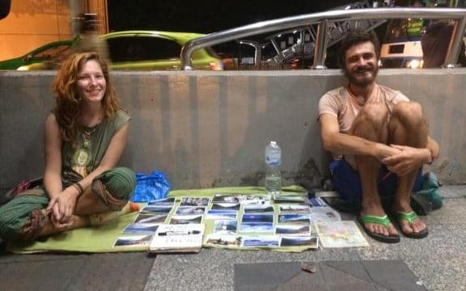
I know. Accidents happen.
People get swindled and tricked. Situations occur where you lose everything. I get it. It has happened to me. I know that it happens. However, the only conclusion that I can come to, as someone who HAS been in a foreign land with absolutely no money, is that these people are NOT willing to work for money to survive on.
This disgusts me.
This happened to me in China. [1] Trapped in Hangzhou and had to labor to get airfare out. Also happened to me in the Philippines. Here [2] I was swindled and left for dead. [3] Happened to me in Hong Kong where I was stranded in the International airport. Three times, I was stuck in a foreign land with no money. Yet, I will tell the reader this… I NEVER begged.
Look at the photos below. Why aren’t they doing something to earn money instead of begging? I understand that things can go wrong and you can actually need money in a state of emergency. This happens, and is a realistic event.
It has happened to me. So I do know. That is why there are Salvation Army soup kitchens and beds. People can be hit with bad luck. They can be swindled, and stolen from. They can be hurt in a strange area where no one knows them, and due to circumstances they might need to turn to strangers for support. It happens. Yet, I must admit that I am very opinionated about the people in the above photos, because there are other options open to them. Yet they are not following through on what they NEED to do.
But… but…
But, this is Thailand for goodness sakes! Those gals could earn some quick money pulling a “short time” on their back (which is exactly what the local Thai people would think), and why the only ones giving them money were foreigners.
However, those girls should not need to even consider that, as those guys can work themselves. Indeed, they can dig ditches, and wash windows on the 34th floor of a downtown skyscraper.
I would do so, and have. I have done things that I did not want to do. I did the ugly, disgusting and dangerous work. I provided for my wife. But these guys, what is their malfunction? Heck, they can sell their expensive cameras, and watches.
And I did. This is not some one-line justification, I actually did things.
I crawled under a San Louis Obispo restaurant into a vat filled with kitchen grease and emptied it out with a ladle into a drum, I had to crawl over dead rats, with swarms of cockroaches crawling over my body. I was covered in spider webs. It was hot, dirty, greasy, foul and putrid, but I did do it.
Other examples included crawling out to the end of a boom tower on a broken drag-line to fix a snagged cable. These are dangerous tasks, but you do what you need to do.
Begging should be a “last resort” activity.
How we got by
We parked the van in highway rest stops, church parking lots, or state parks (and game-lands). Sometimes we parked in the parking lots of cemeteries.
In all cases, we needed to get permission to park and just “be”.
Sometimes, we were not wanted. Neighbors or concerned citizens would call the police and they would come and “check out the situation”. It might be a flashlight knock on the wall of the van at three in the morning, or a flashing light swarm around the van. The police would come, handcuff us, and ask us some questions. Sometimes they would escort us outside the town limits, other times they would drive us to a charity or church to help us.
The police were kind, for the most part, and respectful of us.
At that time, there were no cell phones or “smart” phones. If we wanted to communicate with others we needed to make a phone call (often from a phone booth), or write a letter. When you write a letter, you need to purchase “stamps” that you would lick and stick on the top right side of the envelope. The contents of the letter was private. No one could open the letter aside from the recipient. If anyone did, they would risk severe federal penalties. Of course, in those days, people actually cared about privacy. Letters were then mailed either in “mail boxes” or taken directly to the Post Office to mail out directly.
Then, just as now, theft of mail and opening mail that isn’t yours is a serious penalty. I would have never thought that anyone would do such a thing. However, as I was to soon discover, it is pretty common in the lower rungs of society. Indeed, once you lose everything, or if you move to a new area where you know no one, you enter the ranks of the low and impoverished.
When I was in Syracuse University, I once saw my neighbor stealing my mail. I went to the Post Office, and complained. They took it quite seriously. Privacy was considered an important part of one’s life back “in the day”. Of course, that seems so funny today. No American has any privacy. The Bill of Rights is meaningless.
You are preyed upon.
Everyone has an angle. Those with money see your weakness so that they can profit from it. Maybe use you for labor, sex, or for bait for a larger scheme that they have in mind. There are all kinds of people and we met some really despicable people. They came in all sizes and shapes. Some were obvious, like a slime ball who was waiting outside the Salvation Army and who had an interest in my wife (at the time). He wanted us to go into the alley in the back of the store to show us a used kitchen-stove he wanted to sell.
Some were not so obvious, like a church (Baptist) elder who offered to hire my wife to work in his office at night. You know, after working hours, to help “sort personal things out”. Some were just a group of rowdy college youths acting like a rabid pack of dogs. Obviously they didn’t know the terror they were inflicting on others.
The world is filled with all sorts of people.
The Best Time to Travel
The best time to travel is before you are trapped.
That is to say, before you are trapped in a job, or a career, or in a life with children and their schooling. Sure there are exceptions. For instance, people who sail the world and home-school their children on board, and those whom were born into a nomadic life. But for the vast bulk of Americans, the concept of travel is just that, a concept. Most Americans have never left the region where they were born in. Most Americans have traveled very little, and only one in five holds a passport (a dated reference). The world of true and real travel is one that most Americans do not participate in.
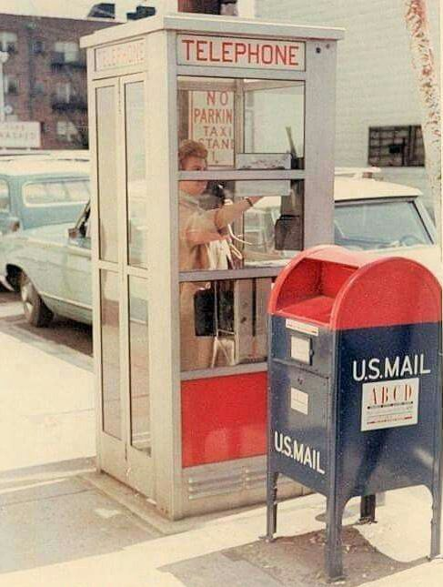
Of course, not every job can trap a person.
If the person is college educated; being unemployed for more than three months is often a career-terminating move. Thus, most college-educated people tend to become trapped in their jobs, professions and careers simply due to the fact that any extended leave would, in all probability, terminate their career and standard of living.
Other jobs; non-skilled, hourly or skilled are not so fragile. They can handle an extended leave of absence.
Start small and simple.
Save one week’s pay. Map out a journey 4 states away. Go there. Take a tent, live in hostels, and eat cheaply on outdoor grills. Plan on a travel duration of just under two weeks. Return. Then… when you return, plan your next adventure. The idea is to go to a place that is strange and where you don’t know anyone. Then go there. The point is just to DO it.
The Ronald Reagan America
“I felt like lying down by the side of the trail and remembering it all. The woods do that to you, they always look familiar, long lost, like the face of a long-dead relative, like an old dream…” - Dharma Bums by Jack Kerouac
For us, we began our “Great Adventure” during the 1980’s. Let me take a moment to reflect what the 1980’s were like. (As well as to remove myself, and the reader, from the rewritten historical narrative. During the years of 2008 through 2016, there was an ACTIVE effort to rewrite history.)
I was married at the time.
Though I will not relate that story here, it is a significant part of my life with great influences and interesting insights into the relationships my wife and I had while I was <redacted>. While this manuscript is autobiographical in scope, it dwells primarily on the key focus of my relationship with the Martian exploratory group. Relationships with my family are only tangential to this. (Though there are some very curious cross-personality and cross-quantum influences that are mutually resonant.)
The “Great Adventure” refers to the period in my life that began with my layoff as an Engineer to when I returned to the naval base at China Lake to complete my ELF training and entanglement.
This period was one of travel and adventure. It was a nomadic life that was heavily influenced in me being “summoned” to California by the ELF probes, and me resisting the calls because I had no recollection of what had transpired at the base previously. This period was a period of excitement and adventure as no matter what we did; all roads lead to China Lake and my ELF entanglement. I could not avoid my destiny. My wife had no clue as to what was going on, but she did support me in my travels.
For they were different than the 1960’s and 1970’s that I “grew up” in. It was a time that was quite unique and very, very different from what the reader might experience today.
At this time, there were no cell-phones, the phones were either mounted on the wall, or were attached to it with a long cord. Computers existed, but were text only as green letters on a black screen… and were expensive! D&D was very popular, and people watched TV at home (“Where’s the beef?”) as their primary source of information and amusement.
Cameras used film, and they came in little polypropylene containers that looked like Barbie-doll size trash cans. You had to buy the film and it was expensive. A roll of twelve pictures would equal the cost of two Burger King lunches.
D&D Dungeons & Dragons (abbreviated as D&D or DnD) is a fantasy tabletop role-playing game (RPG) originally designed by Gary Gygax and Dave Arneson, and first published in 1974 by Tactical Studies Rules, Inc. (TSR).
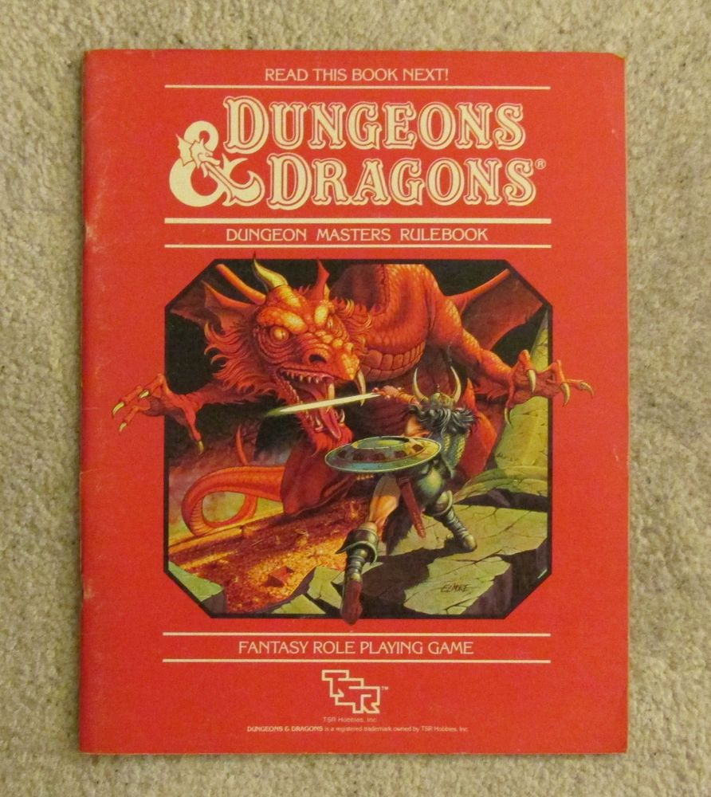
Where's the Beef "Where's the beef?" is a catchphrase in the United States and Canada. The phrase originated as a slogan for the fast food chain Wendy's. Since then it has become an all-purpose phrase questioning the substance of an idea, event or product. In the ad, titled "Fluffy Bun," actress Clara Peller receives a burger with a massive bun from a fictional competitor, which uses the slogan "Home of the Big Bun".
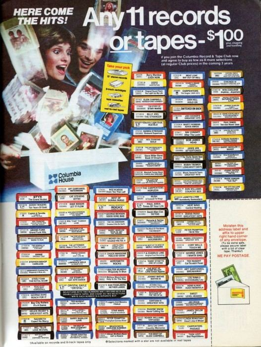
The so called “Silicon Valley” was just starting to take form. America was building up to finish the “Cold War” once and for all. We were going to out-produce those pesky Russian Communists until they would need to give up. (And, it worked!). The walls (figuratively and literally) came down.
Media was experimenting with CGI. Their early efforts were cautiously embraced. As a result, Max Headroom was terribly popular.
Computers
Computers were just leaving the hobby realm and entering the work force. Few people, aside from “nerds” owned a computer. The ones that were available were terribly expensive. For instance a “large capacity” hard drive would be 10MB and cost nearly $4000. The screen was monochrome and only presented text. It ran on MS DOS and utilized a “Dot Matrix” printer. Everything was off-white ABS plastic.
Max Headroom Max Headroom is a fictional artificial intelligence (AI) character, known for his wit and stuttering, distorted, electronically sampled voice. He was introduced in early 1984. The character was created by George Stone, Annabel Jankel and Rocky Morton in the mid-1980s, and portrayed by Matt Frewer as "The World's first computer-generated TV host," although the computer-generated appearance was achieved with prosthetic makeup and hand-drawn backgrounds. Preparing the look for filming involved a four-and-a-half-hour session in make-up, which Frewer described as "grueling" and "not fun," likening it to "being on the inside of a giant tennis ball." ABS Interesting bit of trivia; the ABS material tended to age when exposed to UV light. Over time the white color plastic housings would turn into a disgusting dirty pee-yellow color. To extend the life of the product appearance, computer manufacturers would dye the plastic an off-white color. One of the secrets to selling old or used computers was to remove the plastic housings and then paint them bright white. People would snatch them up quickly, even though the electronics inside would be terribly obsolete. LOL.
CDROM’s had yet to be popular.
So people used “floppy disks” to store their work on. Music was available on records, 8-track tapes (Still available in the 1980’s, but their late 1970’s “hey days” were over.), and cassette tapes.
You could join “record clubs” that would send you a weekly catalog where you could purchase music on image alone. They would “pull” people in by offering them ten free tapes, then once locked in, you needed to make so many purchases a year. They also did this with books.
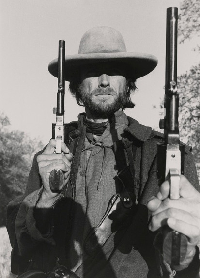
Cordless telephones were just being made available. Each one was large, and typically had an extendable metal antenna that you would need to extend to obtain a half-decent signal. (Watch the movie “Risky Business” to see an example of this.)
This was the decade when the Nintendo NES came into our lives.
Indeed, many of us spent our time typing “cd games” into old IBM computers, loading some beeping game or another. But when you really think about it, that’s not much different from today. We still have consoles, we still have computer games, and we definitely still have beeping. The games themselves are different, the graphics are different (obviously much, much better), but the environment is still very similar.
You sit on a chair. You play.
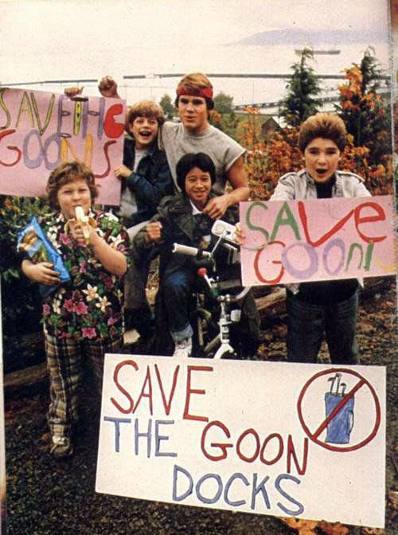
“Must-see TV” (of course) meant “The Cosby Show”.
John Hughes movies were very popular and they were light, happy and full of 1980’s energy. How can you forget the movies “Sixteen Candles”, “Ferris Buellers Day Off”, “Weird Science”, or “Career Opportunities”. Or what about John Cusack’s movies as “One Crazy Summer”, and “Better off Dead”. All are classics.
“I want my two dollars!” -Johnny the Paperboy
While I would dress for work, I would often pass by kids going to school and I was constantly surprised with what they were wearing. Typical attire, in California, seemed to be neon spandex biker shorts with just a T-shirt. Really strange indeed.
(Of course, I was in the middle of extreme world-line switching at the time.)
Work office attire consisted of polyester everything. No one wore jeans or polo shirts. Men wore ties on collared shirts. Both the ties and the collars on the shirts tended to be wide. The colors were all tans and browns with a distinct movement towards pastels. We all carried traditional briefcases. No one ever carried a backpack to work. If our bagged lunch would not fit inside the briefcase, we would carry it outside of it.
Office Coffee
All offices had a large tureen of coffee. Typically it was this huge metal cylinder with a spigot at the bottom. It would peculate coffee just like a conventional peculator. These tureens held maybe five gallons of water, and used up a sizable portion of a can of coffee to make. The tureen would be on all working day. This was popular from my father’s generational period in the 1960’s thought the 70’s and 80’s up into the 1990’s.
Later on, into the middle 1990’s this was replaced by restaurant-style individual coffee pots cooking on burners. Typically offices would use either two or four burner units. (Six burner units were rare outside of restaurants.) Unlike the tureens that were maintained by the company purchasing coffee and employees being responsible for making the coffee, the individual coffee pots typically came as part of a “service”. A person come come to the office every two weeks to make sure the coffee is stocked up properly and the machine was in working order. The cost for this service was much higher than just the cost of a coffee and tureen.
This added convenience for the workers came at a price. When the coffee came out of the tureen, it was free to the workers. Let me repeat. Work office coffee was FREE for the office workers.
Fast forward to the Bill Clinton presidency; the age of greed.
No one ever took up collections to fund the coffee. That didn’t happen until much later in the 1990’s under President Bill Clinton. (It wasn’t his fault. He “inspired” everyone to go after money and become successful. Everyone was trying to “find an angle”.
At that time everyone was trying to get rich.
Companies were trying all sorts of techniques to improve profits. The President at that time inspired CEO’s, who then implemented various “programs” to improve profits. I’m sure that there are a number of notable Dilbert cartoons on this subject.) In this environment, coffee became a “perk” that companies would use to “attract” talent and retain employees. Prior to that, it was an accepted norm. Everyone EXPECTED free coffee at work. (That, alongside with free health plans with no co-pays and no deductions from one’s paycheck.)
I was in my twenties. The advantages of this was not appreciated until I was older. Ah, the generation before me had it so so good!
As an aside, as of 2018, coffee is still free to the office workers in the UK, Australia and China (that I know of). It’s only in the USA that companies treat their employees as farmed cattle to exploit. (Indeed, I hear Google let’s all their employees drink for free or at low reduced prices, as long as you are not white or male…LOL.)
“(I) Was working 75 to 84 hours a week for years till they laid me off ... they call it the American Dream but I was trying not to fuck up while exhausted and never believed it. ... just ensuring ppl don’t die in with planes crashing ... nobody gives a fuck especially the assholes called our representatives.” -Vendetta Feb 6, 2018 3:29 AM Permalink
I owned a Beta-Max player.
In fact, I upgraded to the “super” Beta-Max player prior to purchasing the core unit. I guess that I was a little crazy about electronics at the time. However, I felt that buy purchasing the upgrade before I purchased the player gave me advantage.
I was correct. However, the advantage only lasted five years. Sigh.
I would be able to run off to the video store and rent a tape or two for the weekend. Over time, the high quality of Beta was replaced by the low-quality but low-cost VHS players. I like everyone else, eventually made the switch. Ah, it was a sad day indeed. For a while, unable to go to the store to rent videos, we would watch the old Beta tapes that we had at the house. Pickings were slim. We had “Roxanne” (Not to be confused with the television series of the same name.), “Spaced Invaders”, and “Soapdish”.
Life in the 1980’s
Carl’s Junior served food on wooden plates with a hot metal pan centered on it. They used real metal utensils, and a real serrated edge knife with a wooden handle. Drinks were provided in reusable brown plastic coffee cups, or tall plastic glasses for soda. A newspaper waited outside in a vending machine, and you could smoke in every restaurant. At that time, they still maintained a more-or-less hybrid existence; part restaurant / part fast food. (Sort of like Denny’s today.) Now, of course, they have devolved into just another fast food franchise.
Cross walk signs were in English. They did not use an array of LED diodes to form a picture of a standing or walking pedestrians. I guess that people then were able to read English, where today in the USA, you just are not ever sure.
Cell phones did not exist. Therefore, it was easy back then to isolate from the rest of the world, now you’re surrounded by world’s noise everywhere. Then you could isolate yourself. A quiet walk was for contemplation and enjoyment. It was possible.
Restaurants served a free tall glass of ice water with every meal, even for children. People used toothpicks and the ashtray on the table. (You could smoke in the restaurants as well, and buy your cigarettes out of a vending machine in the lobby.)
People smoked at their work desks. In fact, most desks were issued a clear ash tray when a new hire came on board. In the supply cabinet were usually a small stack of extra ash trays.
The meeting rooms all had big ash trays. Men carried lighters, as did women. Though, the small pack of lighters were still commonly available everywhere. Typically they would have the name and phone number of the establishment where they came from.
Some (typically Sales and Marketing types) would smoke cigars that would pollute the entire office. There was no such things as “designated smoking areas”. That was a creation of the Clinton administration to make work places safer (for the children), as well as to reduce the costs of insurance.
Thank you Mr. Clinton and your close buddies in the insurance agency. </sarcasm>
How the children, who were too young to work, be affected by secondhand office-smoke is beyond me. But you know, there is no logic in politics. It is just nonsense spewed out to control the masses through fear and confusion.
Smoking Most men have a vice — some pleasure in life that isn’t necessarily safe or healthy, but can be partaken of in moderation. For many gentlemen that’s tobacco, usually in the form of a cigar or pipe. Sure, you can walk into the tobacco shop and grab whatever you recognize or is cheapest. Or you can become a bonafide connoisseur, understanding why one tobacco variety differs from another, where each comes from, and those you truly like. Go down to the local tobacco shop and have the tobacconist show you the ropes. And of course you need hands-on study! Smoke (and sip — tobacco always pairs well with whiskey) until you find the gems that leave you relaxed and smiling at the end of the day. For the Children “For the children” was a catch phrase of the Clinton Administration. Yet, it just boggles the mind how children would be affected by workplace smoke. You cannot work until you are 16 years old. The connection between the Clinton's and the insurance Agencies Don’t believe me? Don’t know what I am referring? Think that I am just displacing blame? Do your homework. Know your history. The Clinton's, and by extension, the DNC were conjoined at the hip with insurance companies. Then they started to diversify. You can well consider the high costs of drugs today to be directly related to their need for multiple mansions. They started increasing all their premiums dramatically, and the presidential administration helped them along magnificently with all kinds of supportive (pro-insurance) rules and regulations. This manifested in many forms. One of which was the banning of smoking from the workplace. Another was the increase in insurance premiums. Yet another was the plethora of optional programs that people could implement to “lower” premiums. Until the insurance agencies obtained political power, they were just a simple business providing a basic service. Now, today, companies are fearful of legal actions and increase in costs if they fail to do A, B or implement C.
Indeed, a typical work desk at that time would have a dial or push button phone, a little tiny calendar (given away by insurance agencies and the like), a large page-by-page day planner that you could write your appointments on, an ash tray (for your cigarettes or cigars), a desk lamp with an adjustable neck (to improve upon the piss-poor fluorescent ceiling lighting), and a large desk mat.
Men who were “white collar” and who worked in the office typically wore business jackets. We would arrive and take off our hat and coat and sit at our desk wearing our white shirt (long or short sleeve) and tie. This all started to change in the middle of the 1980’s and I pretty much welcomed the change to a more relaxed and informal working environment. Though, I did lament the loss of my coat rack.
However, with the relaxation of work dress standards came a tightening of work place behaviors.
During the Bill Clinton presidency, we watched the erosion of office worker respect. Culminating in cubicle work “farms” and impersonal bosses driven by Harvard MBA types. Watch the movie “Office Space” to see what I am referring to here. It is not a coincidence that the Dilbert cartoon became so popular during this time.
“Office Space” is a 1999 American comedy film written and directed by Mike Judge. It satirizes the everyday work life of a typical mid-to-late-1990s software company, focusing on a handful of individuals fed up with their jobs. The film's sympathetic depiction of ordinary IT workers garnered a cult following within that field, but it also addresses themes familiar to white-collar employees and the workforce in general. It was not a big success at the box office, making $12.2 million against a $10 million production budget. It was well received by critics and sold well on home video, and it has become a cult film.
People flew flags on their porches during the fourth of July and did not worry about some social justice warrior or black lives matter radical burning their house down. Additionally, the “American Stars and Bars” (Confederate flag), “Don’t tread on me”, State flags, and MIA (Vietnam missing in action) flags could be flown as well.
In my ENTIRE life, I have NEVER seen a “rainbow”, Antifa, or BLM flag flown on someone’s porch.
I guess, I need to be in “Lala land” (Hollywood) or Wall Street and mingle with the face of the oligarchy (Hillary Clinton, Harvey Weinstein, and George Soros) to experience that reality.
The movies of that time were actually (in my mind) pretty awesome. “Sixteen Candles” was pretty typical for the time. I preferred comedies as they were “up beat” and positive with a nice happy ending.
You go to a movie, and watch it.
Then afterwards, you go out for a “stuffed pizza” and a pitcher of beer. At the time, I was terribly fond of olive, mushroom and pork thick crust pizza. Afterwards we would go and get a butterscotch milkshake on the way home. We were regulars at movie theaters. They were pretty cheap back then. Two people could go out and watch a movie and have a large pizza and a pitcher of beer for under $10. Movies that we saw in the theater included “Better off Dead”, “Hot Dog the movie”, “Lost Boys” and “One Crazy Summer”.
“As someone born in '91, I've been brushing up on my '80s movies, damn would that have been a good time to be alive.” - ThBurninator
Even McDonalds had tiny little disposable aluminum cigarette trays. Republicans used the color blue, and Democrats used the color red.
Reading the morning newspaper was a popular pastime and every weekend restaurants would share multiple copies of the Sunday editions of the paper to various patrons to read. Five dollars would fill your gas tank and it would last (almost) all week. Drive-ins were still very popular, and malls were everywhere. A price for two to watch a movie was under $5 on a Friday night. Yes. It was, a very… very different time indeed.
Democrats were Red
Democrats Used the Color Red Globally, long-standing traditions dictate which colors represent specific political camps. Here, the assignment of red to the Republicans and blue to the Democrats is not a reflection of each group's ideology. Rather, this color designation is the supposed result of a collective decision made by major media networks. The general public had no say in the matter. Neither the Republican nor the Democratic Party has ever officially chosen a color to represent its organization. Up until former President Bill Clinton came into office, the colors were “more or less” defined as Blue for Republicans and Red for Democrats. Today, the official (rewriting of history) explanation is that the advent of color technology, television networks created their own identifying colors, often alternating with each new election to avoid any appearance of favoritism. It is an explanation that sounds plausible, but this is not really true.
I grew up during the “Cold War”. During this time, the political colors were set and established. I do not care what colors were used in the turn or the century, or during the Spanish-American war. Or what colors were preferred during the revolutionary war. All that is academic babble. My concern, especially in regards to this narrative, was what the colors were during the 1960’s through the 1990’s. This was the time that I grew up in. The United States was smack dab n the middle of a "cold war" with two communist nations; Russia and China. Both of whom used RED for their socialist ideals. Red = Soviet Union (Communist) Red = Red Chinese (Communist) Blue = Liberty and Freedom. As were the fifty stars (states) on the flag. The simple truth was that for the most part during the 1960’s, 1970’s and into the 1980’s, Republicans were blue and democrats were red at the top and blue on the bottom. (Oh yes, there were exceptions. However, the reader need not be fooled. The largest quantities of the most popular election buttons for Republicans were blue color. In fact, when I went to college, I could not find any that were a different color, and I looked!)
Don’t believe me? Go to an antique store and look for Ronald Reagan election pins and Jimmy Carter pins. You simply cannot find red color Regan, Bush Sr, or Bush Jr election pins. At best you might find red and blue, but no only-red buttons. Neither can you find (too many) blue Jimmy Carter pins either. There are some, but they aren’t common. Far more likely is finding green color Jimmy Carter buttons. Why is this the case? Why, you might ask. Well, the answer is really quite simple. During the “cold war”, red was the color of communism. Both for communist Russia and for communist China. Conservatives then, as today, hate communism as it is the opposite of individual freedom. It is a collective society.
During the cold war, red was the color of communism. Red was the color of communist China. (Note the communist Chinese flag color.) Red was the color of the soviet union. (Note the color of the soviet union flag before the breakup.) Blue was the color of freedom and liberty. However, a social collective society has been the bedrock of the Democrat party for most of the century so the Democrats never had a problem with the color red. That is why that during the cold war, most Democrats wore Red and most Republicans wore blue. It is truly disingenuous for revisionist historians to use time periods around the time of the civil war to reflect the mindset of Americans during the cold war time period. Or the limited small quantities of specialty buttons that were produced for limited market segments to reflect the vast bulk of the overriding color scheme. We are discussing the cold war, and it is this time period that I am discussing here. The reader must remember and must be reminded that the Democrats during this time period, for the most part, supported the efforts of Mao and his revisionist climate in China; totally ignorant of the mass killings.
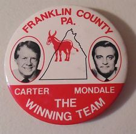
They supported the “workers paradise” in Russia , though they officially deplored the military buildup. During the 1970’s red was the color of Democrats. Blue was the color of Republicans. Go to a antique shop or go online and purchase a Reagan/Bush campaign pin. Read the articles in the 1972 Mechanics Illustrated magazines, and Men’s Adventure magazines of the 1960’s. Do not use the Internet to check your facts. The internet is all politically manipulated. The Internet is a blackboard that is continually being erased and rewritten. Go to a old book store and read the articles and look at the advertisements yourself. Check for yourself. Yes, there were exceptions. However, for the vast bulk of the time during the 1970’s this was the case.) Truthfully, up until the year 2000, it was never formally established what the colors would be, though it was clearly favored that Republicans were blue and Democrats were red; forcing then (famous) political commentator Rush Limbaugh to remark; “Has anyone else noted that the networks switched colors?” Thus, in 2000 for the first time, all the major news outlets agreed to use red for the Republican Party and blue for the Democratic Party. A switching of the political colors. I personally believe that this switch was mutually approved by both political parties, while it was initiated by the Democrat party for reasons unclear.
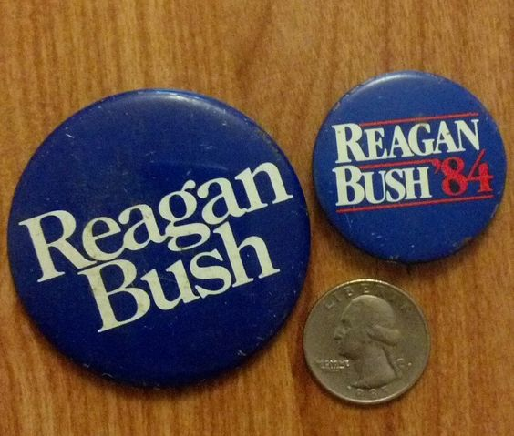
My personal opinion is that the Democrat party embraced the current populist trends at the time; they adopted the New World Order (NWO). It is the overriding policy of what we call today “the globalist elite”. The color for this one-world-government was to be blue. As such the EU adopted blue as their unifying color. The color of the UN was light blue, and President Clinton (D) had all the Army insignia changed to match the baby blue color of the UN troops. It is only speculation on my part, but I sincerely believe that the adoption of the color blue for the Democrat party had more to do with a future agenda of a global nature than any localized nationalist policy platform. The Democrats favor a global social world government. There is nothing good or bad about it. That is just the way it is.
From a web site titled “What do you miss about the 1980’s”;
“The 80s was a PC free culture for the most part. You can't have an open and honest discussion today because people will be more concerned about "how" their words will be misinterpreted vs. the content of what they are saying.” - MAJ L. Nicholas Smith
“Saturday morning cartoons, Saturday afternoon cartoons, MTV with actual MUSIC, music with ACTUAL MUSIC, Bo Jackson, Wayne Gretzky, Hershel Walker, Empire Strikes Back, Return of the Jedi, Commando, Rambo, The A-Team, Air Wolf, Playing outside, free speech without the fear of being branded by some pussy who is offended by it, Yep pretty much to me, born in the mid 70's the 80's were the best decade ever.” - SPC Andrew Griffin
“I miss the greatest president in my lifetime, Ronald Reagan, and the pride he instilled in America.” - MSgt (Join to see)
Yes. I too miss the ability to practice “free speech” and the Bill of Rights. I guess ol’ Bush and Obama pretty much ended all of that. (Sigh.)
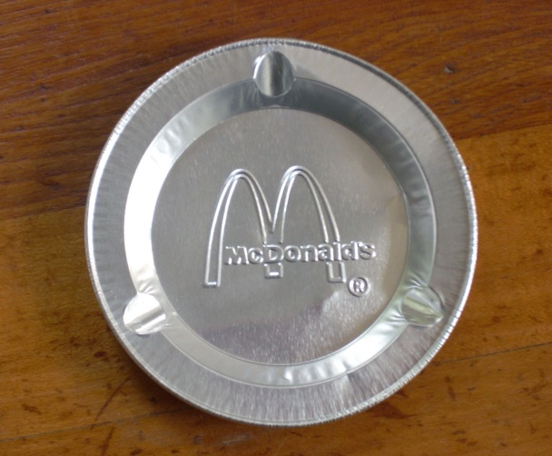
Yes, the Progressive Democrat Liberals have pretty much fucked the nation all up. (Don’t go PC on me. They did actually FUCK it all up.) It’s not just me saying this from the point of view of an American, but from the point of view from someone in MAJestic.
Service to Self Demons
<rant>
Jesus-H-Christ. If you the reader are offended, then put this fucking manuscript down and walk away. The Democrats fucking strip-mined American culture. They made debauchery and looting of Americans a national pastime. (Not just Democrats, of course. There are many socialist-inspired politicians who became RINO Republicans so that they could have a comfortable life through lying and cheating their constituents.)
How in the heck can someone become a billionaire without hurting another in some way?
It’s not just Democrats, but many Republicans as well. So I will repeat the question. How, in a reality balanced upon individual thoughts that manifest into actions, can a person become a billionaire without negatively affecting others? How is it possible? How?
Ponder that profound statement for a second.
If they weren’t so busy trying to manipulate others, alter the lifestyle and time progression of others, fixated on carnal desires of sex, sloth, and the greed of money how could they possible accumulate wealth? The accumulation of wealth is not a given. It is NOT an event that manifests for a handful of “lucky” people who happen to be at the “right place at the right time”.
Those are simplistic childish ideas and concepts. They are rooted in a belief that the physical is all that there is. It is one man (or woman) for themselves, and if they are aggressive enough, and have the right opportunities, and some skill in manipulation, they can take from others. They can take. They can take, and take, and take.
If there is one thing that the reader can get from <my words of wisdom> is that the universe does not work that way. Yes, you can alter your reality by thought. Yes, you can acquire wealth, and comfort and desirable relationships. Yet, everything comes at a cost. To acquire a large volume of “stuff” will have a corresponding large “cost” elsewhere. Other people will be affected.
This is not politics. Do not be so naive that a socialist model is heavenly derived. It isn’t. In fact, it is a manipulative trick used by the skillful to fleece the ignorant. There are no easy answers and pristine solutions. Every decision, thought and action comes at a cost. Some people do not care what the costs are for their desires and their actions. They only want the end results to manifest.
</rant>
Indeed. Oh…my…The 1980’s were a time of expression and freedom. Those of us who lived through that time do remember what free speech was.
Ah “free speech”. Don’t take it from me alone. Here’s some opinions from Reddit “What do you miss about the 1980s” we have these jewels…
“Kids being able to walk to the park without the cops being called. They also were immersed in social situations where things were scary, uncertain, and difficult allowing them to not have a nervous breakdown opening a bank account or saw a Halloween costume they didn't care for.” - savemejebus0
“No cellphone, no problem. It was nice to be able to leave a note at home with 'went to run some errands'. Whoever came home and saw that would have to wait for you to return. If the phone at home rang and they answered, they would take a message or the answering machine would. You could leave, go do what you wanted and not have to explain yourself in the moment as to what you're actuality doing. If you wanted a private conversation, you went to a payphone, especially one with the long cord so you could sit in your car and roll the window up. It was bliss! Now you have your digital GPS tracking leash with you at all times, either volunteering everything you do on social media, replying to every request for your location and if you don't reply, you're chastised for it. I miss the days of being able to just get lost. Now your berated for 'turning your leash off'. Where were you, who were you with, why didn't you answer, what are you trying to hide, I'm not important enough to reply to, you could have been dead, had a car accident, kidnapped, cheating and so on. You have to have lived in that time to understand it. If you didn't, you don't realize how bliss it was to be able to get lost on purpose. Turning off your phone is like ignoring stomach cancer.” - Ennion
MTV actually played music videos.
It wasn’t political, and staffed with urban ghetto blacks. The same was true with the NFL. They played football, and the networks didn’t run (what can best be described as) a negro version of a KKK rally during every single friggin’ game.
We had endured the horrific 1970’s where President Nixon (R) acted as a King. We were very jaded by the resultant investigation of the wiretapping of phones. Oh, how silly that looks today with 24-7 mass surveillance now, and the behavior of Eric Holder (DOJ) and Hillary Clinton. We saw what happens when a good-honest man; President Carter (D) (who was ineffectual as a president) becomes president.
Ronald Reagan
We, like the rest of the nation, were ready for a real change, and we got it. We lived during the presidency of Ronald Reagan (R). There will be many who have their own ideas about this time. But I will tell it through the eyes that lived through that time. Say what you will about “Ronald Ray-Gun” and the 1980’s, but the truth was that for me, it was a time of hope, and of adventure.
Ronald Ray-Gun An enduring nick-name for the president during that time period. And important, as we really understand now. For not very well known is exactly how frighteningly close the world came to global thermonuclear war. Historical revisionists seem to conveniently forgotten the dangers of that time. Thanks to a February 1990 report (National Security Archive Electronic Briefing Book No. 533 previously classified "TOP SECRET UMBRA GAMMA WNINTEL NOFORN NOCONTRACT ORCON") published by the National Security Archive at George Washington University after a 12-year Freedom of Information Act battle. The US and Soviets were dangerously close to going to war in November 1983, the bombshell report found, and the Cold War-era US national-security apparatus missed many warning signs. That 1983 "war scare" was spurred by a large-scale US military exercise in Eastern Europe called “Able Archer”. It was because of this military operation that the Soviets apparently actually believed that it was part of allied preparation for a real war. (In part due to the very nature of Ronald Reagan’s public comments to that effect.) The Soviet military mobilized in response. US-Soviet relations had definitely plunged in the early 1980s, but since then experts have debated how close the US and Soviets had come to the abyss during Able Archer. Read it here and be horrified; http://nsarchive.gwu.edu/nukevault/ebb533-The-Able-Archer-War-Scare-Declassified-PFIAB-Report-Released/#_ftn3 . Of course, we know how how all this was avoided, and how the USA and Russia became friends again. However, the reader must realize the real and stark truth; we are now living in an alternate time line spawned from that event. A time line, that switched in part, through significant extraterrestrial intervention by the <redacted>. (More detailed information about alternative world lines are addressed later on in the blog.) Yes. Ronald Reagan may have had this nickname, but the truth is that he turned his back on the neoconservatives. He fired them, and had some of them prosecuted, and when his administration was free of their evil influence (for the most part, though other neocons such as Orin Hatch continued to promote efforts to create global nuclear conflagration), and President Reagan negotiated the end of the Cold War with Soviet President Gorbachev. The history is clear; the military/security complex, the CIA, and the neocons were very much against ending the Cold War as their budgets, power, and ideology were threatened by the prospect of peace between the two nuclear superpowers.
Everyone was optimistic. But you will not see that in any revisionist history books.
Ah, the rewriting of the past. Here’s El Rushbo on the rewriting of that decade by President Obama and his minions.
“President Obama micromanages the economy into the ground and tells the American people that our better days are behind us. He says the great days of America’s past were not really legitimate. They were built on phony policies, trickle-down economics from the Reagans. We stole resources from other nations around the world. Our superpower status was not deserved. We now must manage the decline. And I, Barack Hussein Obama, am the smartest guy in the world to manage the decline of the United States and its economy. His replacement liberates the economy, unleashes the United States economy to the point in under a year it is growing at twice the rate it ever grew under Barack Obama. And yet we’re told Obama’s brilliant, he’s so smart, we can’t even stay in the same room with him. He’s so brilliant, we can’t keep up with the guy. He’s so brilliant, all we can do is bow at his feet and try not to be blinded by the light reflecting off him. Donald Trump is silly. He’s insane. He’s obsessed. His unfit. We need psychiatrists examining him. We need the 25th Amendment.”
The Iranians released the American embassy hostages, a large American “freedom” space station was going to be built. Americans were returning to the Moon and then Mars! (Plans later killed by President Obama (D). President Obama said that going to the Moon wasn’t worth it. We were there already. So we will go to Mars instead, he said. Then he killed Mars exploration because it was too expensive, he said. Then he goes around and gives $7 billion dollars to South Africa and $150 billion dollars to Iran. WTF? What world-line am I on? Jesus… maybe it’s time to get off.)
Release of Hostages Fifty-two American diplomats and citizens were held hostage for 444 days (November 4, 1979, to January 20, 1981), after a group of Iranian students, belonging to the Muslim Student Followers of the Imam's Line, who were supporting the Iranian Revolution, took over the U.S. Embassy in Tehran. Space station Freedom Space Station Freedom was a NASA project to construct a permanently manned Earth-orbiting space station in the 1980s. Although approved by then-president Ronald Reagan and announced in the 1984 State of the Union Address, Freedom was never constructed or completed as originally designed thanks to the efforts of Bill Clinton, and after several cutbacks, the project evolved into the International Space Station program.
1980’s Culture
Russia was tearing down the wall in Germany. Companies began hiring again, and everyone was hiring everywhere. MDMA was discovered, and the youth of the country learned to emote to each other. LSD was still being used, and everyone was questioning the roles that society fostered upon them.
Madonna had released her first of many albums, and she wasn’t such an aggressive asshole. Pastels were popular and everyone was dancing to Wang Chung.
Michael Jackson was only a singer, and yet had to “Beat It”.
Tear Down this Wall. " Tear down this wall! " was the challenge issued by United States President Ronald Reagan to Soviet Union leader Mikhail Gorbachev to destroy the Berlin Wall, in a speech at the Brandenburg Gate near the Berlin Wall on June 12, 1987, commemorating the 750th anniversary of Berlin. MDMA MDMA (3, 4-methylenedioxy-N-methylamphetamine) is an empathogenic drug of the phenethylamine and amphetamine classes of drugs. MDMA has become widely known as "ecstasy" (shortened to "E", "X", or "XTC"), usually referring to its street form, although this term may also include the presence of possible adulterants. LSD Lysergic acid diethylamide, abbreviated LSD or LSD-25, also known as lysergide (INN) and colloquially as acid, is a semisynthetic psychedelic drug of the ergoline family, well known for its psychological effects which can include altered thinking processes, closed- and open-eye visuals, synesthesia, an altered sense of time and spiritual experiences, as well as for its key role in 1960s counterculture. It is used mainly as an entheogen, recreational drug, and as an agent in psychedelic therapy. LSD is non-addictive, is not known to cause brain damage, and has extremely low toxicity relative to dose. (Though the DOJ would beg to differ on this.) Madonna Madonna is an American singer-songwriter, actress, and businesswoman. She has been one of the most prominent cultural icons for over three decades. As such, she has achieved an unprecedented level of power and control for a woman in the entertainment industry. She attained immense popularity by pushing the boundaries of lyrical content in mainstream popular music and imagery in her music videos, which became a fixture on MTV. Madonna is known for continuously reinventing both her music and image, and for retaining a standard of autonomy within the recording industry. Pastel interior design Pastel colored interior design, inspired by a retro art-deco movement that was popular at that time. Wang Chung Wang Chung are an English new wave musical group formed in 1980. The name Wang Chung means "yellow bell" in Mandarin Chinese, and is the first note in the Chinese classical music scale. The group found their greatest success in the United States, with five Top 40 hits in the US, all charting between 1983 and 1987, including "Dance Hall Days" (No. 16 in the summer of 1984), "Everybody Have Fun Tonight" (No. 2 in 1986) and "Let's Go!" (No. 9 in 1987). In fact, the reader should note that many stereo stores, and clothing stores at this time, played his music endlessly during this time period. Beat It "Beat It" is a song written and performed by American singer Michael Jackson from his sixth solo album, Thriller (1982). The song was produced by Quincy Jones together with Jackson. Following the successful chart performances of the Thriller singles "The Girl Is Mine" and "Billie Jean", "Beat It" was released on February 14, 1983 as the album's third single. The song is also notable for its famous video, which featured Jackson bringing two gangs together through the power of music and dance.
It was a magical time, a heady time of life and adventure. As a result, we experienced both the good and bad that life had to offer us.
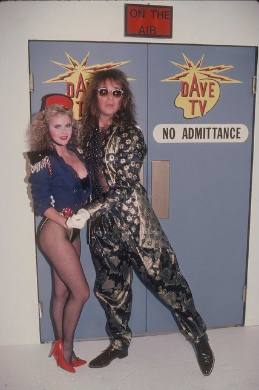
Bad People
We were often taken advantage of (Many people saw us as weak and tried to capitalize on that weakness.) , and had many (close) encounters that were often quite ugly (This includes everything from robbery, manipulation, misuse, abuse and even violence.). But that is life. You just can’t hide away and expect happiness to come to you. You have to go out to it and get it.
For us, the 1980’s were an experience of life, lived as it were, through the eyes of young impressionable love. We saw both the good and the bad of life. Not everyone who looks poor is poor. Not everyone who looks rich is wealthy. Not everyone who acts religious is spiritual, and you will find friends in the most unlikely places and enemies luring behind the kindest smiles.
Both the good and the bad confronts the traveler. But most Americans that we met were good, and kind hearted. But we did, actually, come across a number of exceptionally bad people. That is always unavoidable.
“Love is the hardest thing in the world to write about. It’s so simple. You’ve gotta catch it through details, like the early morning sunlight hitting the gray tin of the rain spout in front of her house, the ringing of a telephone that sounds like Beethoven’s Pastorale, a letter scribbled on her office stationary that you carry around in your pocket because it smells like all the lilacs in Ohio.” — Don Birnham (The Lost Weekend — Billy Wilder, 1945)
We needed to find work, and in the process, our van took us on many adventures. We slept under the stars and hid in wide expansive parking lots. We worked at whatever jobs we could find. Sometimes it was manual labor, while at other times, we cooked in the kitchen.
We did whatever it took.
We would travel as far as the van could go. Then broke down, out of gas and money, we would find work. Then live off the money. Then, after a month or two, we would go again. We were always on the move. We were always living life. Always grasping what came before us with an open heart. Though, often times the hearts of others lay closed to us…
I remember once…
...we hadn't eaten in 4 days. We had collected some change out of a pay phone, and bought a can of spam with it, and a loaf of day old bread. We were parked in a roadside rest area. And so we went to one of the BBQ grills sitting there next to a picnic table and made a fire and were cooking our spam on it. When in the middle of it, a policeman came up to us. Apparently, a lady, driving a Buick, has seen us and called the police. The officer, then under her instruction, berated us for using the grills in the park. He told us that the grills were not to be used by us. But rather by people with families and children, and that they used charcoal, not sticks to make the fire... (You know) The whole time that he berated us, that old biddy watched on with a big smug smile on her face... The policeman put out the fire and threw away our food. Then threatened us with jail unless we left...
Yes, I remember those days.
Fat, smug, bitch with a capital BITCH. She, were she still alive, would be a female social justice warrior trying to “protect” others by enforcing her ideas of perfection.
- Never mind that she is overweight to the point of obesity.
- Never mind that she is living off the money of others, as she herself is unemployed.
- Never mind that her only accomplishment was written in her High School year book.
She tries to justify her existence though the control of others. Especially those who, for one reason or the other, are unable to fight back.
A life lived in fear is a life not lived
Everyone lives in fear. Everyone, and I do mean EVERYONE, has warned us along the way to watch out for crazy people and to be weary of strangers, but I’ve found that to be largely unnecessary.
They were just warning us out of their own fears of the unknown.
Most of the people who threatened us were well-established, locals who saw us as a threat to their calm and stable way of life. While we did meet some very dangerous people on the road, we were (typically) able to avoid them because, I think, we were just far too innocent and their hearts weren’t so cold as to corrupt the good that shined through our hearts.
Of course, we did meet some crazy and even evil people. That is what happens when you step outside the walls of your safe enclave. However, we were too kind, and too nice for anyone to really do anything bad to us. But there were some close calls. Truthfully, we found an equal proportion of bad people scattered about the population.
Some were obvious, and behaved stereotypically bad. While others looked like the pinnacle of respectability; and held important positions in the church, society and government. Yet, they were evil incarnate.
Yes, and we did meet some very bad people on the road. There were times when we could have been hurt dangerously, but we did not permit that to happen. When a person ventures out, it is natural to experience both the good and the bad in people.
Yes, we had SOME bad experiences. You experience life when you travel; both the good and the bad. But, most of our experiences were positive.
The vast, VAST, majorities of people in this country are good and were willing to help out however they could. Whether it’s by buying a meal or by letting you sleep in their house or at their business, people are more than willing to accommodate you in any way they can when they see you struggling. I figured this would be the case, but the extent is surprising to me, nonetheless. Americans are good people. Most have kind hearts. They are kind and understanding for the most part.
The only times that I’ve seen someone who wanted to help me out but couldn’t are when an individual has to abide by a chain of command. This includes almost all government services, and hierarchical organizations.
Sometimes it was a social service agency, that wouldn’t accept people without children, at other times it was a Church that wouldn’t help us (though, the woman behind the desk gave us $40 out of her own wallet). It was a lady at a gas station who wanted to let us sleep out behind their business but the company wouldn’t allow it. Or, a stranger who put an envelope on our front window contained $40 with the words ‘God bless you’. These people were the angels that held our hands along the way. These people did so in secret and told no one what they did. These are the “real” Christians who tried to make a good and positive difference in our lives, even though they knew nothing at all about us.
In short, people who are free to help, will. While those who are forbidden from helping still wish they could but are unable to.
There are “Christians” and then there are Christians. Some are good and some not so. We found that Baptists and Methodists were very helpful. So were Catholics. Lutherans and 7th Day Adventists; not so much. In general; charismatic Christian organizations were the most welcoming. With Assemblies of God being, by and large, the most accepting. (Now, in the year 2016, the political landscape has changed substantially. President Obama openly states that Islam has been the very fabric of American culture. What complete nonsense! We traveled the entire country and never, ever saw a mosque or met someone of the Islamic faith. Those that one sees today are fresh arrivals, usually less than ten years as a citizen. At that time, the vast bulk of religions in the USA were of Christian denomination. Do not let the media rewrite history. I say again; Do not let the media rewrite history.)
Ability
While we traveled about, we led a dangerous life in a rather “care free” manner. As such, we would find ourselves presented with “luck”.
Lucky 1
Luck presented itself to us. Many times during our adventures were were “lucky” to find money. Whether it was a $100 bill that would blow in front of our path, or a $20 bill that we would find under a rock. We were lucky.
Lucky 2
We became “lucky” to get free help. Once, our tire blew out in front of a house on a residential street. The woman came out of her house and gave us five (nearly new) tires that she had sitting in her garage. So much luck!
Lucky 3
For instance, I once was playing a game of backgammon. During the game, people noticed that no matter when I rolled the dice, they would always come up “snake eyes” (two ones). Therefore, they asked me to try to see how many times I could roll “snake eyes”. I said “what the heck”, and tried. Honest to God, I rolled 76 “snake eyes” in a row. This is a statistical improbability.
However, the reader should be made aware, that (even though I could not control my “off-world” training) I could alter my world-lines to provide me benefit. Somehow, in a way that I cannot vocalize, I was able to perform this “impossible” feat.
I simply moved my apparent world-line into the realm of one that provided auspicious favor to my cause. Perhaps it was the implants from the Navy… (More about this later…)
Or, maybe it was just luck.
Perhaps it was just my Faith…
This little event that I have just related is absolutely true. The reader needs to accept it as truth and study just HOW it was possible.
Was it because there was an “angel” looking over me? Maybe helping me along and providing little “guideposts” to tell me not to worry?
Was it simply because we had “faith”, and the faith altered our thoughts that manifested into the physical? How about that?
Or was it, as I will explain later on, the fact that the implants provided me with world-line dimensional switching ability. Since I was not yet “calibrated” (that would not happen <redacted> at China Lake), there wasn’t any control over how the world-lines would change. They were like a sea that I was floating upon, and depending on my thought process at the moment, I slid into alternative realities very easily and simply.
Ponder these points. Some “pieces of the puzzle” will start to fall into place later on in the narrative.
Faith
“Faith is taking the first step even when you don't see the whole staircase.” -Martin Luther King, Jr.
We acted on faith. We did everything on faith; that someday, somehow, everything would work out. Faith; that we would get food, showers, work, friends, and a hot meal. Faith; that there was a purpose to our wandering, and that our mutual love had direction. We did this even though, to others, we appeared aimless and without direction. And in doing, on this faith we often received random blessings.
Faith and belief are aspects of thought. Thought manifests reality.
Lucky 4
While hiking in the deserts of Arizona, we found a $5 bill under a stone. The money came to us exactly when we needed it. Often we would get just what we needed, and it was always unexpected.
Lucky 5
Once, while we were driving in the middle of the hot Texas sun, we discovered that we were getting low on gasoline. It was a serious situation. As we drove on, we just could not see any gas stations at all. The fact was that we were out of gas and only had $1.25 on us. We were just about to run out of gas and be stranded in the middle of nowhere, when we finally saw a gas station. So, in the middle of the desert, we pulled up to the only gas station for miles.
I got out, and with the precious handful of change in my hand, I walked over to the gas pump. I gingerly unhooked the hose and started to put the precious fuel into the tank. I knew that I only had what amounted to as spare change. All of what we had was going to go towards this gas. For us, literally every penny counted.
As I put the nozzle into the tank, and depressed the lever on the nozzle, there was a slight click. Suddenly and to my astonishment, the gas hose exploded! Gasoline squirted about everywhere. It poured out like a river. This was no small water hose; this was a full fire-hose explosion of gas. It sprayed everywhere. It was like a long thrashing snake that spewed out a torrent of fuel. The van and I were both flooded with gasoline. Gasoline flew out of the hose like a vomiting snake. It was out of control and lashed and flayed about wildly.
The gas station attendant was horrified! He quickly ran to the master switch and turned off the pump. But the damage was done. I was completely soaked with highly flammable gasoline. He ran up to me and quickly moved me to the side of the station. He turned on the water hose there and quickly hosed off with water.
What did he do? What could he do? He and the station manager were terribly apologetic and upset. They didn’t know what to do. Any other person might sue them. Out of the kindness of his heart, he gave me a free full tank of gas. He gave it to me and helped me clean up. I took a shower behind the station and we continued on our way.
One horrible event resulted in blessings beyond expectation. We needed a full tank of gasoline, but only had enough money for a small cupful. On faith, we were given just what we needed, exactly when we needed it. Sometimes what looks like a disaster is really a blessing in disguise.
Lucky 6
Yes. We had our trials. We once had a grey field mouse that move inside and lived with us. It would perform amazing acrobatics to get at the food that we tried to put out of harm’s way. We tried everything we could think of to get rid of it. All to no avail. We even dismantled all the woodwork on the inside (at a state forest somewhere in Georgia), and all that happened was that it just hunkered down inside of some of our clothes.
Ha! One day, while we were doing our laundry, a stray alley cat visited our van. It climbed in, rooted around, and left carrying that pesky mouse in it’s jaws. Now, why didn’t we think of a cat earlier?
At other times, our trials related to the weather. It was either too hot, too cold, too wet, or too humid. The reader should recognize that once the wood paneling and insulation was ripped out of the van, we were essentially living in a metal box.
Cold became frigid cold. Hot became torturous hot. Rain was impossible, as leaks started to form in the roof edging. We had to erect a tent on the inside of the van to keep the rainwater off of our food supplies and our bed. Nearing the end of our “tour”, we had become masters of the “jury rig”.
You know what?
We learned a lot about life. And, instead of comparing yourself to others, you need to stop. Just stop thinking about other people and what they think about you. You need to think about you, and the individual path that YOU are on. You, and everyone else in the world, needs to stop judging themselves by the standards set by media, government, religion, social groups, and instead think of only judging ourselves.
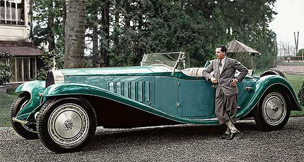
Stop judging others.
Everyone has their own lives. What we see is the shadows of their existence as it pertains to our reality. So we need not get too worked up about how they live their lives.
When I carry on and rant about some SWJ or some corrupt individual in power, it is not because I am judging them in a comparative manner. I am relating my emotions related to that individual. Most people make judgments comparatively. That is to say; “If it were me, I would not do what they did…” That is different than getting angry with a person because he stole all of your grandmother’s life savings. The reader should understand that there are different ways of making judgments. These ways differ in thought intention. Unless you can control your thoughts, you will never be able to control your life.
How other people live their lives are not our business.
Though it is if it directly affects us. Indeed, there are many kinds of people on this planet, and many ways to live your life. Other people live other lives. Some have harsher lives, and some have easier lives. Some have terrible lives, but they look like their lives are easy and nice. Others have what appear to be absolutely horrid lives, and yet they are fine and happy. You cannot make a comparison at all.
A person, and their true situation, is NEVER obvious to the public.
Everyone on this planet is living a complex life that has invisible chains and entanglements far in excess than what we alone can bear.
It might look like they are doing well. It might appear that they have a nice job, and a new car, and a beautiful wife. It might appear that they are very successful. But the amount of money that a person has is not a measure of success. The appearance that a person has, or the clothes they wear are also not a sign of success. They are only characteristics that provide the illusion of success.
Don’t judge them because they look rich. Don’t judge them because they seem poor. Don’t judge them because they seem promiscuous, or engage in vices. It’s no one’s business but theirs.
We must start to live our own lives. Not vicariously through the lives of others.
You’ve got to accept yourself; who you are and what you are.
It does not matter what has happened in your past. You are not what you have done or experienced. You are not what is valued by the employer who hired you. Your value is not your job. Your value is determined by only one person, and that is yourself. You have to accept it, with all the good and bad that exist inside you.
You’ve got wake up at five in the morning, brew some deep black coffee, and listen to the birds singing their sweet song in the glowing darkness of the new dawn. You’ve got to sit next to the cute girl at the train station who’s reading your favorite book and start a conversation with her.
You’ve got to go to that local attraction that you’ve been meaning to visit but never got the chance to see. You’ve got to start doing things, and stop thinking about them. You’ve got to come home after a bad day and burn your skin from a shower until it is lobster red. Then cool down with a quick cool blast. Then you’ve got to wash all your sheets until they smell of lemon detergent you bought for four dollars at the local grocery store. You’ve got to play with the local dogs and cats in the neighborhood and give them a treat or two.
You’ve got to live life.
Go to that Attraction I lived in Boston for almost a decade and never visited Salem. It’s a great historical place, but I just felt that I could go out and visit it some other time later on. Instead, I just raked my leaves. I just would get two cords of wood for the fireplace delivered by pickup truck. I would go about my daily routine and eat at the local diner. I did not go out and see what was available right in front of me. I wasted an opportunity.
Make it a point to better the world around you. Smile more. Complement people more. Praise people, and complement a stranger that you like their hair or dress. Be helpful. Be nice. Be kind. You have this physical life to live; live it well.
Live your life well.
“…She calls me Raymond, and that’s all right with me.” -Brett Eldredge, “She calls me Raymond”.
You, yes you, have got to stop taking everything so goddam personally. You are not the moon kissing the black-black sky. You are not some “lone wolf” who is without a pack to travel with. We are all interconnected. We all need each other.
You’ve got to compliment someone. You’ve got to help the old lady with her laundry at the laundry-mat. You have to talk to people at art fairs and tell them that their eyes remind you of green swimming pools in mid-July.
Am I making my point?
You have got to complement someone. Tell the girl that she looks good in that dress, whether she does or not. You have to tell that person who has a smile that their smile just made your day. You’ve got to help others; praise others; and do something with your life.
You’ve got to stop letting yourself get upset about things that won’t matter in two years.
You’ve got to sleep in on Saturday mornings and wake yourself up early on Sunday. You’ve got to stop worrying about what you’re going to tell her when she finds out. You’ve got to stop over thinking why he stopped caring about you over six months ago. You’ve got to stop asking everyone for their opinions. You have to stop trying to control things…
You have got to be you. Be the best you that you can be, and forget what everyone else thinks.
You’ve got to love yourself. You have to live your destiny. You have to do what you need to do, and not what other people thing you ought to do. You must follow your heart and live life like it was the most precious thing in the world. You must enjoy life, embrace life, grab life with both hands and gulp the golden nectar down your throat in sloppy splashes of foam. Then wipe your face off with both hands and smile a big toothy smile.
Anything less is a disservice.
“They stood at the top to a little rise. "Feel," said Driscoll, his hands and arms out loosely, "Remember how you used to run when you were it kid, and how the wind felt, Like feathers on your arms, You ran and thought any minute you'd fly, but you never quite did." The men stood remembering, there was a smell of pollen and new rain drying upon a million grass blades. Driscoll gave a little run. "Feel it, by God, the wind. You know, we never have really flown by ourselves. We have to sit inside tons of metal, away from flying, really. We've never flown like birds fly, to themselves, Wouldn't it be nice to, put your arms out like this —" He extended his arms, "And run." He ran ahead of them, laughing out his idiocy. "And fly!" he cried. He flew.” -Here there be Tygers Full reprint of this fine Ray Bradbury story.
This was a great time for me and for my wife. It was a great and important time. We (I was married at the time) did it without money, often living way below the poverty line. Many times, we lived without any money.
We would walk together in the malls of the country. (The malls were commonplace at that time. It seemed that every town possessed a mall.) Inside the malls were an ever-changing smorgasbord of people. Different people, different faces, but they were all the same.
Everywhere we went, we were surrounded by all the things that we couldn’t afford, and really didn’t need. We would walk the halls of lavish extravagance; the things that glittered and beckoned to us. But, what we could not afford.
All we had was each other. We had love. We had food, and we slept in the van. Our needs and costs were low. This was our “Great Adventure”.
This period of time was an important one. For me to accept the “training” that would occur later in NAS China Lake, I had to change my viewpoints on many things. This meant that I had to learn new things and be exposed to different ways of thinking and different cultures. I had to change in ways that were not obvious. This was intentional and it was absolutely mandated by our extraterrestrial handlers.
The basic choices in life
“Sometimes the only pay off for having any faith, Is when it's tested again and again every day,” -“Immortals” by the music group “Fall Out Boy”.
We discovered that life was a choice between two fundamental things. You could either have true freedom, or you could have security. It was always this. It was always these two divergent choices. You could work all the time and get money to buy what you don’t really need, but have a reasonable level of comfort. Or you could have freedom to do what you want, but not really able to do anything that costs money.
Let’s face it; there is a price on everything in the USA.
Out of necessity, we traveled at will. We walked and explored many places that the average worker saved up months to be able to visit. We went everywhere in the USA (on the meandering path that continuously pointed us to California). We saw ocean beaches, mountaintops, national forests, urban cities, and long forgotten historical monuments. We ate at local diners, and swam at (long forgotten) local water holes. We explored. We read a lot. We learned how to play musical instruments. We learned how to paint, and just used the time to meditate and pray. It was a heady time for sure.
Local Diners I have always enjoyed eating a diner. I loved the “Airstream” shape and the shiny aluminum panels. It wasn’t until I moved to Massachusetts that I really began to appreciate them. In fact, I would suppose that most of the few remaining diners could be found in the Northeast (United States) in the “New England” states. Now the food is basic Americana, of which you would see omelets, meatloaf, and hamburgers. What is so great is the “feeling” when you eat there. We are so accustomed in eating “fast food” that we have forgotten the “dining experience”. Instead of a (Starbucks-style) paper coffee cup, you get a good solid (bang on the tabletop) coffee mug. Instead of flimsy (McDonald-style) flatware, you get solid metal silverware of substance and utility. Regarding this point, please read this interesting article found here; https://flavourjournal.biomedcentral.com/articles/10.1186/s13411-015-0036-y , which states… “We report a study conducted in a realistic dining environment, in which two groups of diners were served the same three-course meal. The presentation of the starter (centred vs. offset plating), the type of cutlery used for the main course, and the shape and colour of the plate on which that dessert was served were varied. The results revealed that the weight and type of the cutlery exerted a significant impact on how artistically plated the main course was rated as being, how much the diners liked the food, and how much they would have been willing to pay for it. The change in the shape and colour of the plate also affected the diners’ liking for the dessert.” -Cutlery matters: heavy cutlery enhances diners’ enjoyment of the food served in a realistic dining environment Local Water Holes Here are some resources to get the reader started on this adventure; http://www.newyorkupstate.com/outdoors/2015/05/best_swimming_holes_in_upstate_new_york_ny_hidden.html and http://www.kcra.com/article/8-norcal-swimming-holes-you-need-to-check-out-this-summer/6347668 and http://www.onlyinyourstate.com/massachusetts/swimming-holes-ma/ and http://www.newenglandwaterfalls.com/swimmingholes.php . Enjoy!
“If we look at our world we are intellectually, technologically vastly overdeveloped with very primitive emotions, and that’s why the world is at risk.” -Rick Doblin (Neurons to Nirvana)
Was it a waste of our time? (My father certainly thought so.) Should I have better put the time to develop a career? (Like my university classmates? They were all working for big companies like IBM. And, at the time of this writing, are still there! Never laid off. Image that!) Should we have spent the time to save for a house, and then get a lawnmower, and joined a local church? (In other words, get “roots” and “raise a family”.) Was traveling alone together, and experiencing life as we did worthwhile?
YES. Yes, it was worthwhile. Absolutely!
Later on in my writings, I discuss in detail the feelings I have about my entire involvement in this program. I do have many feelings and emotions. They are complex ones. However, the memories that I treasure the most were those where I was poor, with nothing except my wife by my side.
I cannot show a nice mansion or great sports car to the reader. I cannot justify my lack of wealth and material comforts, but I can tell the reader that my life was enriched during this period. I can say that it was enriched in ways that I cannot vocalize upon. I can say that I was made a better, more caring and more understanding person because of those experiences.
However, this being stated, aside from the physical manifestation that I experienced, the reader must understand that I HAD to experience “American Life” in a typical fashion for that period of time. That was the ONLY way that I could be an effective “Dimensional Anchor”. I know that the reader (at this stage in the post and blog manuscript) has no idea what I am referring to, however what I experienced, and how I reacted to it, was an important part of my role in MAJestic.
“One of the bittersweet things about growing old is realizing how mistaken you were when you were young. As a young political leftist, I saw the left as the voice of the common man. Nothing could be further from the truth.” -29JAN18 5:21PM Thomas Sowell
Social Media
“A human being should be able to change a diaper, plan an invasion, butcher a hog, conn a ship, design a building, write a sonnet, balance accounts, build a wall, set a bone, comfort the dying, take orders, give orders, cooperate, act alone, solve equations, analyze a new problem, pitch manure, program a computer, cook a tasty meal, fight efficiently, die gallantly. Specialization is for insects.” -“Time Enough For Love”, by Robert A Heinlein
When I grew up there wasn’t any kind of social media. None. There was no Facebook, QQ, Snapchat, or anything like that. There were no “mobile applications” because there were no mobile phones. Our entertainment was limited to friends, movies, outdoor activities, and television. No one had a cell phone, a PDA, or laptop. Software games were simplistic pixilated arcade machines that resided in movie theater lobbies or game rooms. For fun, if we were alone; we watched television. If we were with friends, we would participate in some kind of outdoor activity.
However, all of this has since changed.
Since the late 1990’s social media has hit America with a great ferocity. This is fine, and has it’s benefits, but one of the draw backs is that a person who has always lived in a world where social media dominates the culture cannot understand what it was like before social media existed. For them, it is very difficult to understand why people acted and behaved as we all did in the 1980’s and 1990’s.
When I was in my 20’s we did something that was known as “hanging out”. Rather than stay inside the house and watch television, or go to a bar, we would just go “hang out”. This may or may not have included drinking. It may or may not included drug use. It may or may not included doing a sport or outside activity. It basically involved being with friends together.
Examples of this (seemingly or not) boring activity can be seen in the movie “Dazed and Confused”, or in the music video “First Kiss” by Kid Rock. Much of that time was involved in cruising the streets in a car of pickup. Often we were in some sort of inebriated state.
Truthfully, the best movie ever made regarding what it was like in my high school, during my Senior year was the movie “Dazed and Confused”. While it took place in the upper great lakes region, I can affirm that it adequately and truthfully represented what my final year in high school was like in Western Pennsylvania. We kids…well, we all “hung out”.
Sadly, I really don’t see that happening any more.
Instead, I see people glued to their smart phone, and playing games… even when they walk! I can go to a restaurant, and the entire table is playing on their phones and no one is talking. What the hell is going on?
Heck, back in those days (before I got married) and well before I entered the US Navy, life was all about hanging out, being with friends, and “chillin’”. Some of the iconic scenes in the movie were so atypical that a failure to reproduce them here would be a great disservice to the reader.
Ah…
But I digress. Social structure back in my generation was quite different than what it is today. We had friends and spent time with them. Instead of going out to Starbucks any paying $10 for a caramel latte, and then sit down and use the WiFi to check our Facebook account, we would do something quite different. Indeed, we would spend the $10 on a keg of beer, or maybe two, and a shit load of “munchies” (food) and enough gas to drive to California and back. (Yeah. Prices were much cheaper then.)
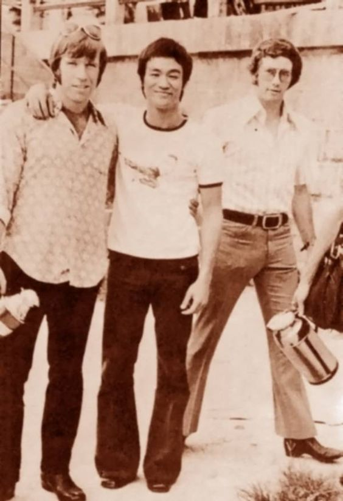
Social reengineering did not occur with the ferocity that you see today. No one talked about “Niggers” or “White Privilege”. We just didn’t. At least not in my circles, we didn’t.
Most of that racist bullshit that you read in the media is just made up bullshit.
Instead we talked about television shows, movies, and what we liked or didn’t like about them. We would discuss Charles Bronson (He grew up in Butler, Pennsylvania which was only a half an hour drive from my High School house. ) getting “justice”. We would talk about Clint Eastwood and his many male-themed movies.
We also didn’t have so much taken out of our paychecks as you kids do today. We had money to spend, and time to enjoy life. We did not need to live in our parent’s basement, and live off them. We worked, even at minimum wage, and could afford our own place and our own car. My generation worked. We earned our place in society. We paid for our house by saving up for it. We paid for our car by saving up for it. When we were not working, we relaxed.
So what did we do? Why, we “hung out” and “chilled”.
I ask the reader; how about testing your knowledge regarding the time period that I am referring to. Do you know how to develop the film that you took with a 35mm camera? Have you ever been to a “roller rink”, a “drive-in”, a stainless-steel “diner”, or visited an automat, watched the “evening night news” (this was before the 24-7 all-news networks)? Do you remember a twenty-five cent cup of coffee? Or, don’t you care, as nothing is better than smashing your piggy bank to buy a cup of Starbucks commercialized beverage?
Oh, and by the way…
“Real” coffee drinkers don’t drink corporate coffee.
Please keep that in mind.
Roller Rink Having a roller-skating birthday party became something of a rite of passage for American children in the 1950s, 1960s, 1970s and 1980s. Roller rinks in the United States underwent significant changes in the 1970s. New plastics led to improved skate wheels—ones providing a smoother, quieter ride—and easier-to-maintain skate floors. The Disco craze from popular 1970s culture led to another increase in the popularity of roller rinks—or roller discos, as some became. Gone were the staid lighting and old-fashioned organ music as a generally older clientele were replaced by adolescents and twenty-something’s skating under mirror balls and special lights to disco beats. The end of the Disco Era and the advent of inline roller skates hit the roller rink industry hard, with many rinks closing. Drive In Theater A drive-in theater is a form of cinema structure consisting of a large outdoor movie screen, a projection booth, a concession stand and a large parking area for automobiles. Within this enclosed area, customers can view movies from the privacy and comfort of their cars. All teenagers from my generation went to drive-ins on Friday and Saturday nights. Contrary to popular contemporaneous conventions, we never stayed home and watched television marathons, or surfed the Internet. A Diner A diner is a prefabricated fast food restaurant building characteristic of American life, especially in New Jersey, Pennsylvania, New York, and in other areas of the Northeastern United States, as well as in the Midwest, although examples can be found throughout the United States, Canada, and parts of Western Europe. Diners are characterized by offering a wide range of foods, mostly American, a distinct exterior structure, a casual atmosphere, a counter, and late operating hours. "Classic American Diners" are often characterized by an exterior layer of stainless steel—a feature unique to diner architecture. Diners share culture with drive ins, and car culture with hot rods and muscle cars. Diners frequently stay open 24 hours a day, especially in cities, and were once America's most widespread 24-hour public establishments, making them an essential part of urban culture, alongside bars and nightclubs; these two segments of nighttime urban culture often find themselves intertwined, as many diners get a good deal of late-night business from persons departing drinking establishments. Many diners were also historically placed near factories which operated 24 hours a day, with night shift workers providing a key part of the customer base. Two Sterling Streamliners remain in operation: the Salem Diner at its original location in Salem, Massachusetts and the Modern Diner in Pawtucket, Rhode Island. I urge the reader to visit a diner. They are still one of my “little” pleasures. Coffee Up until 1976, coffee was one of the cheapest food items that Americans could buy. But sometime in the mid seventies, the producers discovered that they could raise the prices of coffee, and that Americans would pay. At that time I worked as a stock clerk in a supermarket, and well remember the price increasing. First it increased 25%, then another 25%, then doubled. Then doubled again. Americans continued to pay the outrageous prices, because by that time, Americans were addicted to coffee. Coffee was a staple of the American culture. Every household had a coffee pot, that sat on the stove and was on all day. Much later, sometime in the 1990’s Starbucks found out just how far one could push the American love of coffee. They created a “coffee lovers” environment, and charged outrageous sums of money for what was nothing more than boiled beans. (Image how much a cup of boiled peas or boiled lima beans would cost. – The actual and real value of the cup of coffee you drink.) You, my dear readers, are all being taken for a nice long ride by service-to-self individuals and the companies that they surround themselves with.
Indeed, life has changed, and the differences are both subtle and clamorous. This is important for the reader to understand. When I was involved in the MAJestic program, there wasn’t much of an Internet presence. If you wanted to learn about extraterrestrials or conspiracies, you read the local newspaper, went to the local library, or watched television.
While most people had heard of ET, and UFO’s, their exposure to them was much more difficult to experience. Today, with social media and google-style search engines it is effortless. But, when I was involved in the program, very few people took the kind of activities that I was involved in seriously. For them, the United States would have never been involved in that kind of activity.
We believed in the United States government because we were uninformed, gullible, and saw no need not to. In those days, it was still possible to become a middle class statistic without obtaining a college education. (Indeed the most ridiculous concept in the old 1960’s cartoon “The Jetsons” was the concept that a factory worker could support a middle class lifestyle for a family of four.)
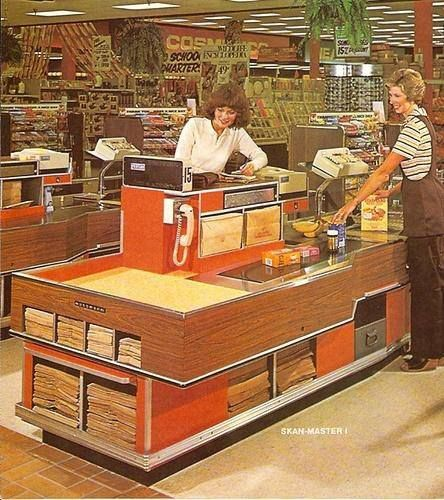
What was it like? It was like THIS.
Work was everywhere, and the amount of government intrusion in one’s lives was minuscule compared to what is present today. We believed that the United States was good, righteous and just. (Even after the “Watergate” fiasco.)
We believed that the media would report the truth. (Bwahhhh ha ha ha ha ha…)
We believed that those we voted into office would represent us. (Gosh,…I am now lying on the ground, rolling, and laughing my ass off!!!)
We believed that our tax monies went to “just” purposes. (Oh, stop…stop! This is just too rich!)
That was what we believed! As strange and as unlikely as it might sound today.
Stop buying into the lie that your vote matters. Your vote doesn’t elect a president. Despite the fact that there are 218 million eligible voters in this country (only half of whom actually vote), it is the electoral college, made up of 538 individuals handpicked by the candidates’ respective parties, that actually selects the next president. The only thing you’re accomplishing by taking part in the “reassurance ritual” of voting is sustaining the illusion that we have a democratic republic. What we have is a dictatorship, or as political scientists Martin Gilens and Benjamin Page more accurately term it, we are suffering from an “economic élite domination.”
We were very simplistic.
In every study of events prior to, say the year 2000, one must take into account that communication, activities and behaviors were fundamentally different than they are today. That difference should be recognized and applauded. Because (as the reader should be well aware by now) we are all connected in a quantum sense. Group thought, amplified by social media, directs our behaviors whether we want to recognize it or not.
That being stated, I enjoy social media as much as the next guy. Tumblr, QQ, WeiXin and Pinterest are my favorites, while fffound comes in a close number three. (Update fffound shut down a few years ago.)
“…a darkened auditorium with 264 silent people in the seats. on the stage, me, sitting on a stool, lit by a spotlight, the only light in the theatre. I hold up a photo of my cat, 10 people applaud, two or three hold up photocopies of the same photo, the rest do nothing, watching, waiting… Meanwhile a lone masked person in the back heckles me and throws popcorn at the stage.” -Unknown
I personally love Tumblr, as the quality of the pictures that you can find is outstanding. It is also a great site to find porn.
The problem with this is that you don’t want to see porn all the time, 24-7.
Yet, if you find a porn blog on Tumblr that you like, you will bookmark it and get on it’s feed. As a result it will “pollute” your normal and regular feed. You will be like other Tumblr users, who when using their computer in public or at work would whisper under their breath “Please don’t be porn. Please don’t be porn.” when checking their Tumblr feed. LOL.
You see, Americans have to pretend that they don’t like porn. We have to pretend that we are disgusted by looking at nude people. Yet the opposite is true. All men enjoy porn. At least soft-porn. Hard core stuff can get too ugly. And, that is the way it is, and no quasi-religious or SJW revisionist is going to erase that fact. Go explore the rest of the world. The rest of the world doesn’t really care. They DON’T CARE.
Anyways…
Americans have to be careful on how they express themselves on social media. The FBI, CIA, NSA and other government agencies are investing in and relying on corporate surveillance technologies. These technologies can mine constitutionally-protected speech on social media platforms such as Facebook, Twitter and Instagram.
It is done (supposedly) in order to identify potential extremists and to predict who might engage in future acts of anti-government behavior.
For instance, a decorated Marine, 26-year-old Brandon Raub was targeted by the Secret Service because of his Facebook posts. As such, he was [1] interrogated by government agents about his views on government corruption, [2] arrested with no warning, [3] labeled mentally ill for subscribing to so-called “conspiratorial” views about the government, [4] detained against his will in a psych ward for having “dangerous” opinions, and [5] isolated from his family, friends and attorneys.
Reality sinks in…
“It was at a time when I didn’t seem to have much future. I had no job and no money for the rent. I was living in the Hollywood Studio Club for Girls. I told them I’d get the rent somehow. So I phoned up Tom Kelley, and he took these two colour shots—one sitting up, the other lying down. …I earned the fifty dollars that I needed… You’ll do it when you get hungry enough. ” -Mona (Marylin) Monroe
But all adventures must end.
Or rather, take on a new dimension. As it was, we moved out of the van, and labored to become prosperous. In so doing, we experienced corporate life, and the gold chains that come with it.
Corporate life in the 1980’s through into the new century was a life of beige and light grey cubicles. It was a fluorescent illuminated existence that combined the worst elements of greed with the stupefying aspects of social group behaviors. The 1980’s while employed was much akin to dull grey cubicle farms, the worst of corporate life, and consumerism.
I will not dwell on that period too much. For me, it was a dull void. Scant vacations, great salary, but little to show for it except for the shiny babbles advertised on TV.
Gold Chains There are many things that Americans haven’t a clue about. One is how the American gold market is rigged in the favor of those who sell gold. That should be no surprise, but it was for me. As it turns out, if you go to Hong Kong, or Dubai, and you buy a gold ring it is 100% gold. It is the real deal. However, if you buy gold in the United States, it is 14 caret, or 7 caret, or “white” gold. It is NOT gold. That's right. It is NOT gold. It is an alloy of gold (to make it “better”). What are these names? They are names for gold alloys. Sure, what is the issue you may ask. The issue is that in other nations when you buy 100 grams of gold it is all gold, but in the USA when you buy 100 grams of gold it is an alloy of only a small percentage of gold. Often very low; maybe as low as 5%. So for a Dubai purchaser, 100 grams of gold is 100 grams of gold. But, an American who buys 100 grams of gold only gets 5 grams. This was a big shock to me, and I discovered it when trying to convert some of my gold rings that I had purchased in the USA to the equivalent (new style) in China. Yikes! Consumerism As Chris Hedges writes in Empire of Illusion: “Corporations are ubiquitous parts of our lives, and those that own and run them want them to remain that way. We eat corporate food. We buy corporate clothes. We drive in corporate cars. We buy our fuel from corporations. We borrow from, invest our retirement savings with, and take our college loans with corporations and corporate banks. We are entertained, informed, and bombarded with advertisements by corporations. Many of us work for corporations. There are few aspects of life left that have not been taken over by corporations, from mail delivery to public utilities to our for-profit health-care system. These corporations have no loyalty to the country or workers. Our impoverishment feeds their profits. And profits, for corporations, are all that count.”
Scant Vacations
OK, I am going to get off in a tangent. (What is this, the sixth tangent off this post? Jeeze!) Sorry folks, but this is important.
OK. The fact is this. If you are an American, you get a pitiful amount of vacation time. While “officially” most Americans are entitled to a minimum of two weeks vacations at “most” companies, it only applies to full-time employees who have worked at least five years.
However, most Americans typically don’t work at a company for more than five years. In fact, for all the positions that I held as a “white collar” engineer and manager, I typically was only given one-week vacation. In addition, often WHEN I was permitted to take this was mandated during either the Christmas holiday or during the mid-summer plant shutdown. Here’s some great articles and quotes on this…
“Let's be blunt: If you like to take lots of vacation, the United States is not the place to work. Besides a handful of national holidays, the typical American worker bee gets two or three precious weeks off out of a whole year to relax and see the world -- much, much, MUCH less than what people in many other countries receive."
And even that amount of vacation often comes with strings attached.
Some U.S. companies don’t like employees taking off more than one week at a time. Others expect them to be on call or check their e-mail even when they’re lounging on the beach or taking a hike in the mountains.
No legal obligation to offer vacation
So what’s going on here? A big reason for the difference is that paid time off is mandated by law in many parts of the world.
Germany is among more than two dozen industrialized countries — from Australia to Slovenia to Japan — that require employers to offer four weeks or more of paid vacation to their workers, according to a 2009 study by the human resources consulting company Mercer.
Finland, Brazil and France are the champs, guaranteeing six weeks of time off.
But employers in the United States are not obligated under federal law to offer any paid vacation, so about a quarter of all American workers don’t have access to it, government figures show. That makes the U.S. the only advanced nation in the world that doesn’t guarantee its workers annual leave, according to a report titled “No-Vacation Nation” by the Center for Economic and Policy Research, a liberal policy group.
For what ever it is worth, from 1988 to 2001, while I was employed as an engineer, I took no vacation. While I qualified for two weeks, I was never permitted to take them.
Most U.S. companies, of course, do provide vacation as a way to attract and retain workers.
But the fear of layoffs and the ever-faster pace of work mean many Americans are reluctant to be absent from the office — anxious that they might look like they’re not committed to their job. Or they worry they won’t be able to cope with the backlog of work waiting for them after a vacation.
Then, there’s the way we work.
Working more makes Americans happier than Europeans, according to a study published recently in the Journal of Happiness Studies. That may be because Americans believe more than Europeans do that hard work is associated with success, wrote Adam Okulicz-Kozaryn, the study’s author and an assistant professor at the University of Texas at Dallas.
“Americans maximize their… [happiness] by working, and Europeans maximize their [happiness] through leisure,”
So despite research documenting the health and productivity benefits of taking time off, a long vacation can be undesirable, scary, unrealistic or just plain impossible for many U.S. workers.
Maybe a chance for change
A recent report has found that the United States is the only advanced economy that does not require employers to provide paid vacation time. Almost 1-in-4 Americans do not receive any paid vacation or paid holidays, trailing far behind most of the rest of the world’s rich nations, according to the report.
“No-Vacation Nation Revisited,” released earlier this year by the Center for Economic and Policy Research reviewed the international labor laws impacting paid vacation and holidays in 21 rich nations. The countries included 16 European countries, Australia, Canada, Japan, New Zealand, and the United States, all major economies that are members of the Organization for Economic Cooperation and Development.
Some highlights of the report:
For the United States:
- Workers have no statutory right to paid vacations.
- The sum of the average paid vacation and paid holidays provided to workers in the private sector ― 16 in total ― would not meet even the minimum required by law in 19 other rich countries, the report notes.
- The lack of paid vacation and paid holidays is particularly acute for low-wage workers, part-time workers, and for employees of small businesses. (Workers in small businesses are less likely to have any paid vacation (69 percent) than those in medium and large establishments (86 percent); only 49 percent of low-wage workers have paid vacation, compared to 90 percent of high-wage workers; part-time workers are far less likely to have paid vacations (35 percent) than full-time workers (91 percent).
- The gap between paid time off in the United States and the rest of the world is even larger when legal holidays are included. U.S. law does not guarantee any paid holidays, but most rich countries provide between 5 and 13 per year, in addition to paid vacation days.
For other rich countries:
- Workers in the European Union are legally guaranteed at least 20 paid vacation days per year, with 25 and even 30 or more days in some countries.
- Canada and Japan guarantee at least 10 days of paid vacation per year.
- Five countries even mandate that employers pay vacationing workers a small premium above their standard pay in order to help with vacation-related expenses.
- Most other rich countries have also established legal rights to paid holidays over and above paid vacation days.
- Several foreign countries offer additional time off for younger and older workers, shift workers, and those engaged in community service including jury duty and for activities like union duties, getting married, or moving.
“The United States is the only advanced economy in the world that does not guarantee its workers paid vacation days and paid holidays,” John Schmitt, senior economist and co-author of the report, said in a statement. “Relying on businesses to voluntarily provide paid leave just hasn’t worked.”
American Average Work Hours:
- At least 134 countries have laws setting the maximum length of the work week; the U.S. does not.
- In the U.S., 85.8 percent of males and 66.5 percent of females work more than 40 hours per week.
- According to the ILO, “Americans work 137 more hours per year than Japanese workers, 260 more hours per year than British workers, and 499 more hours per year than French workers.”
- Using data by the U.S. BLS, the average productivity per American worker has increased 400% since 1950. One way to look at that is that it should only take one-quarter the work hours, or 11 hours per week, to afford the same standard of living as a worker in 1950 (or our standard of living should be 4 times higher). Is that the case? Obviously not. Someone is profiting, it’s just not the average American worker.
American Paid Vacation Time & Sick Time:
- There is not a federal law requiring paid sick days in the United States.
- The U.S. remains the only industrialized country in the world that has no legally mandated annual leave.
- In every country included except Canada and Japan (and the U.S., which averages 13 days/per year), workers get at least 20 paid vacation days. In France and Finland, they get 30 – an entire month off, paid, every year.
But Hey! It’s the price for living in the BEST nation in the world! Right?
Working in America
Here’s a great write up by Ashley Fern titled “The 8 Reasons You Hate Your Job In Corporate America”. I think it says it all far better than I ever could.
“Corporate America: the place where the majority of post grads will find themselves, for better or for worse (but, for the most part, the worse). There is no college class or prep course that can help you prepare for the reality you are about to embark on for the rest of your life. There’s no smooth transition as you begin your life as a corporate slave. You go from having the best four years of your life into a world of misery and greed. There will be highs and lows, ups and downs if you are going to devote yourself to this career path. Sometimes you will love your job but more often than not, this probably will not be the case. It’s hard to find the “right” job when you first exit college. Just because you had a certain major does not guarantee its respective career path will be right for you. Life in the real world versus what you learn in a classroom are two vastly different entities. Unfortunately in many cases, you will sacrifice your happiness and freedom for a paycheck; you become a slave to “the man”. What are the other complaints about working for corporate America… No Freedom The lower you are on the office totem pole, the more people you have to listen to when completing tasks. You have a rigorous schedule filled with tasks that your manager most likely assigned you. You cannot choose which tasks you would like to perform nor which order you want to complete them in as you are most likely taking orders from someone else. Until you run your own company, you are always going to be listening to someone else’s directions. Office Bitch For the abuse you take, you don’t make nearly enough money -- especially after taxes. You will take an endless amount of sh*t from upper management that can and will drive you insane. If your boss is having an off day, guess who is going to feel the worst of it? You are. You are at the bottom of the barrel and no feelings will be spared since you really do not serve an integral role in the company’s success. Obsession With Money You think your first job will be an enlightening experience in which you will finally contribute something meaningful to the world. The problem is that upper management doesn’t want to waste their valuable time on someone that much below them. They would rather focus their attention on whatever task they have on hand. They don’t care about you, all their focus is on whatever can make them the next dollar. Though they will try to give you the impression that that isn't the case. They might issue you a pen with a logo, or arrange some pizza at a meeting. People Are Miserable The majority of people care about one thing about their job and that’s the figure on their paychecks. This is one of the biggest reasons people settle into a career path that makes them miserable. Sure, having the ability to afford luxuries is great, but is it worth your happiness? Wouldn’t you rather work in an industry that brings you happiness and comfort than work at a career you hate just because you make a lot of money? Of course a paycheck is important, without it you couldn’t live -- but at the end of the day, that paycheck isn’t going to bring you the fulfillment that doing what you love does. The People You Work With Suck Chances are you aren’t going to be working with people you would choose to associate with outside the office. Sometimes the person closest to your age is 10 years older than you: #fail. It’s horrible to be stuck inside an office from 9-5 without one person you can talk to. Thank the lord for G-chat. You’re Bored The repetitive, mundane life corporate America offers you is not one of excitement. Life is full of surprises and opportunities; this is where happiness will manifest. You know where it will not flourish? Within the restraints of a 4×4 cubicle, staring blankly at a computer screen. Routine behavior will numb your mind whereas unpredictability will engage it. “Happiness is a state of activity,” as Aristotle has so famously said.
You Realize This Reality Is A Lie Unfortunately, as a generation we were raised with the idea that if we go to school, get a typical job and make a lot of money, we will be happy. Happiness should be a reflection of your personal ambition and success, not by what kind of car you have in your driveway. I would rather be struggling to make ends meet, working towards something I love than relishing in money working at a company that makes me miserable. No Creative Outlet How can you grow as a person if you are stuck doing the same meaningless tasks on a day-to-day basis? This type of environment will literally suck the soul out of you. Living your life in suspense is exhilarating; variety is what keeps things entertaining and exciting. Spending eight hours trapped in a small space reading over excel spreadsheets is not going to get your creative juices flowing.”
Thank you Ashley Fern.
This is all pretty much well known to those of us who had to sit in those grey boxes and stare at computer screens all day long. We did this with absolute dictatorial watching of office hours and battles over the scant vacation and leave time.
Couple that with the ever present risk of losing your job and you end up with a very, very stressful situation.
This was quite prevalent in the white-collar world during the time when I was employed. We lived the life shown in the movie “Office Space”. It was our reality. Welcome to the life that I lived (in the physical).
Peter Gibbons: You're gonna lay off Samir and Michael? Bob Slydell: Oh yeah! We're gonna bring in some entry-level graduates, farm some work out to Singapore, that's the usual deal. Bob Porter: Standard operating procedure. Peter Gibbons: Do they know this yet? Bob Slydell: No. No, of course not! We find it's always better to fire people on a Friday. Studies have statistically shown that there's less chance of an incident if you do it at the end of the week.
There was always some kind of “workplace improvement program” going on. It might be [1] a mandatory blood collection effort (it was, of course they couldn’t say that it was mandatory, that would be against the law… but it was. We all “knew” the consequences if we did not follow what was asked of us.
The government would make regulations to “protect” workers, and companies would either find ways around them, or simply ignore them.).
Consider my experience with [2] a mandatory weekend cleaning of the offices. (The company fired the janitorial staff, and so we all had to come in over the weekend to clean up.)
Alternatively, it might be [3] two trashcans that we would use to separate our trash into. (An on-going “green” effort that the company was promoting.) One for recyclables, and the other for non-recyclables. There were fines and punitive measures placed on us if we did not sort through our trash.
Here’s a true, and illustrative, story regarding this particular company initiative. One night I had to work late. After everyone else had left, I was working at my desk later at night. It was perhaps 7pm. As such, the janitors came in and began cleaning. One of the first things that they did was empty the trash. As I sat there, I watched them empty the trash. What they did was pick up the trash and empty it into a big-wheeled bin. They took the blue color recycle bin and emptied it into a big-wheeled trash hopper. Then they took the “regular” non-recyclable trash and emptied it in the same bin. I watched for a minute or two, and then paused in reflection. Innocently, I asked the janitor why he didn’t separate the trash, as he was “supposed to”. After all, we were being penalized for not separating the trash. In fact, if you were to report on another coworker (for failing to separate) you would be rewarded with perks; a coupon for a discount coffee or a free movie ticket. And they, as violators, would “suffer” the consequences… He responded that he didn’t need to. No one came to collect the sorted trash. No one had set up a system to collect pre-sorted trash. So what they did was just mix it all together. They then would throw it all in the dumpster and it would be picked up by the garbage truck as was. What was going on was an illusion of company participation in a recycling program. However, there really wasn’t any actual effort to recycle the waste. That was corporate America.
Life was simple. Work all week, and look forward to Friday. Beer and pizza at the local restaurant, and then come home and watch a movie. Sleep in on Saturday, eat breakfast at a local diner, mow the grass and then go grocery shopping. Go to church on Sunday, then take a drive and look at yard sales. Go to sleep early because work started on Monday.
It’s not much of a life is it? But that was my life.
OK, back to my story.
So, I am working in whatever capacity that I could find in California. At that time, I was working various minimum-wage jobs. I worked as short order cooks, ditch diggers, roust-abouts, and janitors. It was unrewarding work, for little pay. However, I was in California.
I “felt” that I was where I needed to be.
That all changed when I got a call from the Navy…
The Rest of the Story
My stint from whenever I left my role as a Naval Aviator to when I went into “phase two” of my “training”. This was a confusing time. It was not easy. I was alternatively employed as an engineer, and laid off, trying to find work…hand to mouth. It was a period of searching for work. Living hand to mouth. Opportunities that crop up and disappear, and the lucky employed taking advantage of the masses of unemployed.
As confusing as my story sounds, just imagine what it was like participating in it.
All adventures end, and this adventure came to a sudden end when the Navy tracked me down and put me back on track in my program. That part of my narrative is covered elsewhere.
Conclusion
This post was a rambling collection of memories of an extreme period in my life.
I had been implanted with strange probes for both MAJestic and our extraterrestrial benefactors, then I was left alone on my own prior to being trained on how to use them.
During that time, I was like a sheet in the wind during a hurricane.
My perceptions, exposure and understandings were all altered. My world-lines were constantly switching on and off, in and out, and through and backwards, and I adapted as best I could. I existed in a state of extreme 1980’s. Most of that time switched between being employed in difficult working conditions, and poverty. There wasn’t any stability.
In the meantime, the MAJestic membership were trying to locate me, and complete my training. I was like Jason Bourne, with no memory or ability to control my skills, yet cognizant that I had skills, and purpose. I was the real life Jason Bourne.
Jason Bourne is a fictional character played by a talented actor. I was the real deal, and what I experienced did not look like anything that Hollywood could conceive.
Take Aways
- After acceptance into MAJestic, I was altered with medical procedures and probes. Then, released to the public.
- I was not yet trained.
- For a period of time, I existed as “actuated”, but unskilled in using my abilities.
- This post describes that time.
FAQ
Q: Why do you say such bad things about corporate life?
A: I was trained, and pursued an education towards being a Naval Aviator. Out of necessity, I found work within related engineering fields. At this time the work culture was not of producing things. Instead, it was a culture of making profits for the owners.
This change in intention, and the resultant thoughts affected the world-line. Thus, employees became something else. They became drones that serviced the owners of the companies where they worked. I was thrust into this environment out of necessity.
Q: Why do you disparage Backpackers?
A: There are many travelers who go by the title “backpacker”. Instead of exploring, adventuring and acquiring experiences, they do something else. They travel to distant lands, and try to get experiences without accepting the local culture and integrating within it. That means, of course getting work, and spending a few years fully immersed in that culture.
They are neither acquiring meaningful experiences, nor helping their community. They are instead, completing a “bucket list” of travel destinations. All without meaningful quantum realignments of their garbonic structures.
Q: Why are you so anti-USA? What is your problem with vacations?
A: Comparatively, there is something seriously wrong with a nation that does not permit it’s workers time to live and relax.
Now, if you personally want to work in a stressful environment without a break that is fine. I KNOW that it is very unhealthy and results in terrible side effects. Americans should have much more time off than what they generally receive.
Q: What is the issue about the colors Red / Blue for Political Parties?
A: History has been rewritten. That is disturbing.
That being said, the decision for the United States to embrace a communist and socialist model happened a long time ago, and the implementation was visible in the early 1990’s.
MAJestic Related Posts – Training
These are posts and articles that revolve around how I was recruited for MAJestic and my training. Also discussed is the nature of secret programs. I really do not know why the organization was kept so secret. It really wasn’t because of any kind of military concern, and the technologies were way too involved for any kind of information transfer. The only conclusion that I can come to is that we were obligated to maintain secrecy at the behalf of our extraterrestrial benefactors.


MAJestic Related Posts – Our Universe
These particular posts are concerned about the universe that we are all part of. Being entangled as I was, and involved in the crazy things that I was, I was given some insight. This insight wasn’t anything super special. Rather it offered me perception along with advantage. Here, I try to impart some of that knowledge through discussion.
Enjoy.


MAJestic Related Posts – World-Line Travel
These posts are related to “reality slides”. Other more common terms are “world-line travel”, or the MWI. What people fail to grasp is that when a person has the ability to slide into a different reality (pass into a different world-line), they are able to “touch” Heaven to some extent. Here are posts that cover this topic.


John Titor Related Posts
Another person, collectively known by the identity of “John Titor” claimed to utilize world-line (MWI egress) travel to collect artifacts from the past. He is an interesting subject to discuss. Here we have multiple posts in this regard.
They are;